FLOSS授权
～軟體授權法制與自由軟體授權模式介紹
<免责/>
山寨的，非业界公认的，个人体验为基础!

- 参考所有同好行为总结而得
- 一切资料来自网络互动挖掘
- 一切想法来自日常学习工作
- 一切体悟来自各种沟通交流
- 一切知识来自社区分享印证
- 一切经验来自个人失败体验
<brief/>
- 5' 有关
- 10' 知识产权
- 10' 自由文化
- 10' 许可分类
- 10' 自由软件
- 10' 深入GNU
- 10' 协议选择
- 10' 现实冲突
- 10' 商用模式
02-27883799 ext.1474
林誠夏
英文名稱
簡稱OSSF
O pen
S ource
S oftware
F oundry
鑄造創意與分享創意的場域
中文、簡稱、鑄造場
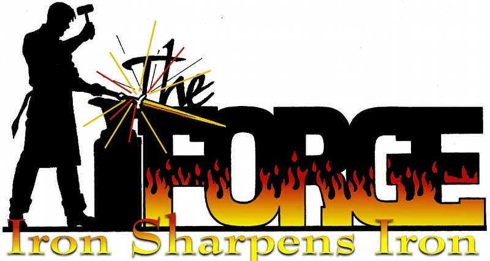
鑄造場的三大工作要項分為
技術支援部門、營運推廣部門、法政諮詢部門
來自、法政諮詢部門
自由軟體法律授權條款分析與軟體授權策略研擬
法政組
鑄造場法政組常態進行的工作
- 研讀自由軟體授權條款
- 彙整各國自由軟體推行政策
- 追蹤自由軟體訴訟案例
- 分析自由軟體商業授權模式
- ………………………
法政組常用/有用連結
歡迎點閱了解
課程主軸
這是一種不同於傳統的另類軟體授權模式
自由軟體授權條款
分下列幾個重點來講述
- 軟體授權的 概念
- 公眾授權條款的 分類
- 公眾授權條款的 選擇方式
- 如何利用鑄造場的 現有資源
<brief/>
- 5' 有关
- 10' 知识产权
- 10' 自由文化
- 10' 许可分类
- 10' 自由软件
- 10' 深入GNU
- 10' 协议选择
- 10' 现实冲突
- 10' 商用模式
智財權
第一章、
智慧財產權法的基本概念
與 自由文化
智慧財產權的英文原文
智慧財產權( IPR )
- INTELLECTUAL
- PROPERTY
- RIGHTS
權利人對它擁有
- 所謂財產權，就是權利人對它擁有
- 等等權利(使用它、利用它來得到利益、賣斷或是毀壞它、禁此他人使用這個權利)
使用
收益處分
排他
與傳統物權有很大的差別
- 「準」這個字代表不是真的，只是很像，
- 準夫婿、準男友…，所以智財權並不是物權，它只是性質很像
準 物權
智財權沒有實體
- 不像物權一般可見可聞可以觸摸
- 智財權沒有實體卻可為權利人帶來很多的經濟利益，所以運作的方式與傳統物權相比複雜許多
無实體
- 最大的差別、智財權沒有實體，不像物權一般可見可聞可以觸摸
「廣義」智財權
著作 權法/ 專利 法/ 商標 法/營業秘密保護法/ 植物種苗法/光碟管理條例/ 積體電路電路布局保護法...
最重要的
- 這三個主要的智慧財產權利，以下會就這三者為各位做簡明的介紹
著作 權
專利 權
商標 權
第一
- 是業者利用「商標」表彰自我商品來源或服務的形象的權利
商標 權
Trademark就是用
文字 圖形 記號 顏色 聲音 立體形狀
向權責機關證明
- 只要申請者能夠向權責機關證明申請技術的
- 在通過審核後
產業利用性 ＄ 新 穎性 進步 性
所以專利的英文是
- 這個字原來就有「明顯、顯著、易於分別的意思」
- 顧名思義可以申請專利的技術應該是「明顯的、顯著的、易於與其他技術分別」的東西
PATENT
白話來說
- 專利權就是國家核可一定期間的
- 在這段期間只有專利權人有機會利用這個專利技術來賺錢
商用專營權
專利權就像商標權一樣
- 權利人需要經過對權責機關
- 的關卡才能得到這個權利，並繳交逐年的行政規費
申請註冊
專利權行使期
20年 10年 12年
- 專利權的行使期間也因技術能力及新穎性深淺的不同而分為
最後一個:
著作 權
- 專利權的行使期間也因技術能力及新穎性深淺的不同而分為
在早期活字印刷的那個年代
- 狹義的製版權
- the right to copy something，但後來著作權的觀念在近代被大為擴張
製版權
現在
- 一般提到 王卯卯的BLOG
- 的時候、它指的是範圍很大的東西。
- 以下簡單用二個概念來解釋著作權
- 動畫原作者王卯卯著作權宣示：使用於個人用途或論壇,但請勿用於商業用途
著作 權
人類精神創作
文學 科學藝術 其他
- 舉凡文學、科學、藝術及其他類似的人類精神創作，都是著作權法所要保護的標的
受到著作權法的保護
語文 音樂 戲劇 舞蹈美術 攝影 圖形 視聽錄音 建築 電腦程式 其他 類型的著作
著作權內設的主义
- 這也是著作權與之前談到的商標及專利之間最大的不同。
創作保護主義
自動的保護
- 所謂的創作保護主義就是
- 著作權人不需要向任何機構聲明他的著作權利，也不需要向權責機構註冊登記後才能夠獲得這個著作權。
自動保障．毋須登記
- 所謂的創作保護主義就是，著作一經創作完成即獲得法律自動的保護，
嗯嗯嗯
- 這個權利的保護，你不需要向任何人主張，也不用特別標示出來
不待主張．毋須標識
- 這個權利的保護，你不需要向任何人主張，也不用特別標示出來。
例如你的個人
- 寫好了不給別人看，但只要內容是個人獨立的精神創作，它一樣受到著作權法的保護
日記
「創作保護主義」
- 以符號來表現的話，就是一般日常生活常常看到的這個大C加一圈
- 這個符號表示著作的權利人保有其所有著作權利，任何人沒有問過他的意思皆不得擅自利用他的作品
- 以符號來表現的話，「創作保護主義」就是一般日常生活常常看到的這個大C加一圈
核心概念
一、人類 精神創作
二、 創作保護 主義
- 一是只要是人類精神創作都保護、
- 二是作品只要一經創作即受到保護，
其初始設立的立意雖佳
- 大抵是獎勵這些商號、創意、及文學藝術發明人的智慧心血結晶
立意雖佳
~資訊時代
- 法律規定卻在很多地方和一般人的現實生活產生若干脫節
脫節!
首先來回顧一下
- 業者利用「商標」表彰自我商品來源或服務的形象的權利
一、 商標 權
城邦文化
- 像是城邦文化事業股份有限公司的
- 事件，就引發了很大的討論和爭議
囧rz
簡單來說城邦公司把
- 這些多人發明網友慣用的網路用語登記成其旗下產品的商標
網路慣用語
- 而這些網路慣用語其實都是網路上的多人共工，並非城邦所發明或是獨有的用語 王卯卯的BLOG
- 所以後續發展引發了很多網友的批評及反感
- 原作者王卯卯著作權宣示：使用於個人用途或論壇,但請勿用於商業用途
茶產地的地區名稱
- 另外、台灣的這些著名茶產地的地區名稱，都已經被大陸的茶商註冊成當地的商標
- 如果將來台灣茶真的用這些名字賣到大陸，都觸犯了當地的商標法，除了訴訟之外只能認賠花大錢把當地已經註冊了的商標再「頂回來」。
溪頭、杉林溪、 阿里山 、玉山
- 另外、台灣的這些著名茶產地的地區名稱，都已經被大陸的茶商註冊成當地的商標
如果是主管單位把關不嚴的話
- 從這兩個例子，多少已經看出來商標權這個制度如果是主管單位把關不嚴的話
- 也是有很多難以解決、不盡合理的弊病。
合理嗎?
- 從這兩個例子，多少已經看出來商標權這個制度如果是主管單位把關不嚴的話，
基於:
- 其實專利權的法理意義奠基於交換制度，任何提交專利申請的技術，它的技術內容都是要公開共享的，
- 國家只是保障專利權人一定期間的專門營利權，這段期間經過後，這個技術就歸全民所共享，每個人都可以拿來實作或是營利。
交換制度
公開->保護
- 技術發明人要公開它的技術內容才能申請到國家專利權的保護
技術公開 → 專門營利權
動機或誘弭
- 反過來說、國家也用這個專利權的保護為動機或誘弭，來鼓勵技術發明人可以公開它的技術
- 所以說這是一個交換制度，專利權保護的原始立意也是非常的好，但是。
公開技術 ← 專門營利權
如果技術審查的能力..
- 專利審查核可的單位，在我國是智財局，如果技術審查的能力不是那麼好的話
- 核可出來的專利，有時也是讓人哭笑不得，甚至會壓迫到一般人正常的社會生活。
脫節
像下面這個例子
- On-line Game其實已經被申請為專利了，那是誰申請走了?
- 專利類型： 發明
- (20年)公告/公開號：I245660
- 專利名稱：用於提供 線上遊戲 之方法及裝置
- 公告/公開日期：2005/12/21
韓國人
- 發明人：金澤振 TAEK-JIN KIM
- 申請人：恩西股份有限公司 NCSOFT CORP.
- 國家： 韓國
- 專利代理人： 陳長文
專利登記名稱是
Method of concealing partial baldness
其實就是俗稱的
- 下面這個連結可以直接點到美國專利商標局的檢索網站，
- 有興趣的朋友可以輸入4022227的證號自行搜索看它的內容
條碼頭
理髮師在美國
- 所以理髮師在美國幫人家理條碼頭，其實得額外支付一筆專利授權金給這個條碼頭的專利權人
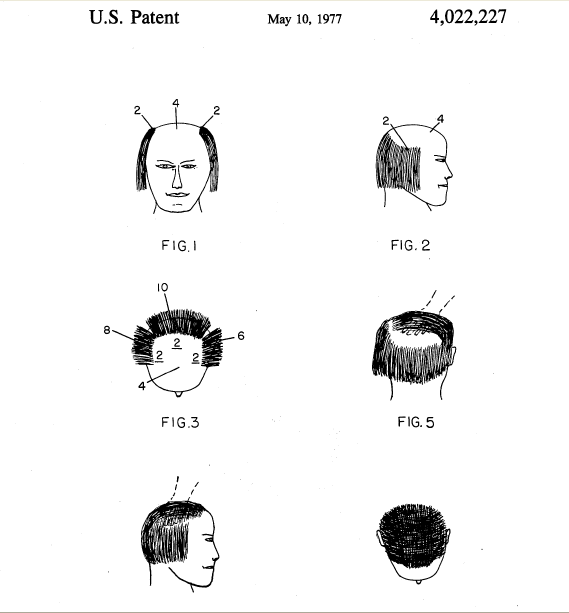
核心概念
- 作品一經完成即產生法律的自動保護，著作權人毋須登記、也不用對任何人聲明這個權利。
- 前面提到，近代著作權的核心概念第一就是它是人類精神創作的保護，第二是它依循創作保護主義
優點
- 創作保護主義的優點在於，法律自動保障創作者的創意表現。
優點 → 自動保障
- 創作保護主義的優點在於，法律自動保障創作者的創意表現。
拘束僵化
- 有時太過拘束僵化
- 在創作保護主義的預設下，對他人作品的任何使用方式一律得問過當事人意見，
- 但有時候使用者根本就很難連絡到原作者。
缺點 → 拘束僵化
- 但是、它也帶來了若干的不便利，就是有時太過拘束僵化，
最嚴重的
- 最嚴重的、創作保護主義的制度拖久確實會人類創意的互相流通
- 王卯卯的BLOG
- 原作者王卯卯著作權宣示：使用於個人用途或論壇,但請勿用於商業用途
阻礙 
「創作保護主義」
- 阻礙創意流通的第一點原因是，
- 著作權的保障與專利及商標不同，
- 著作權利人並不需要向任何機構登記他的權利內容，也可以說著作權利的核可幾近
無人把關
行使保護期間很長
- 而「創作保護主義」阻礙創意流通的第二點原因是、現行法律對於著作權利的行使保護期間很長
很長
早的著作權保護法律
1710
- 中外歷史上最早的著作權保護法律是西元1710年英國的安妮女王法
幾乎看不到盡頭在哪裡
- 近年來著作權的行使保護期間逐年不斷的被增加
- 而且幾乎看不到盡頭在哪裡
逐年增加
幾無止境
- 近年來著作權的行使保護期間逐年不斷的被增加，而且幾乎看不到盡頭在哪裡。
著作權法保護
- 那麼、我們知道著作權法保護的東西很多、保障的期間又那麼長
很多. 很長
新月異的網路資訊時代
- 到了今日這個日新月異的網路資訊時代，難免會碰到訂立之初始料未及的
日新月異 vs 傳統閉鎖
質疑與挑戰
- 援引我國著作權法第52條及65條主張為學術推廣而合理使用
- 此圖片取用於網際網路
質疑與挑戰
- 所謂的質疑與挑戰就像這張圖片
- 此圖片取用於網際網路
- 援引我國著作權法第52條及65條主張為學術推廣而合理使用
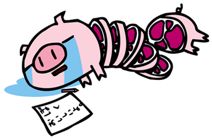
這隻豬說的是日文
- 王卯卯的BLOG
- 動畫原作者王卯卯著作權宣示：使用於個人用途或論壇,但請勿用於商業用途
ぼく.おいしよ!(  …)
…)
中譯就是
- 王卯卯的BLOG
- 動畫原作者王卯卯著作權宣示：使用於個人用途或論壇,但請勿用於商業用途
我、很好吃喔！( …)
共同面對的困境和心聲
- 這是當代許多的商業化媒體及出版公司，所共同面對的困境和心聲
- 此圖片取用於網際網路
- ぼく.おいしよ
- 援引我國著作權法第52條及65條主張為學術推廣而合理使用
因為
- 唱片公司發行唱片，圖書出版業者出版小說，這些商品都要經過商業包裝及花錢宣傳
花錢宣傳.包裝廣告
但卻是
- 常常落得...的下場
- 動畫原作者王卯卯著作權宣示：使用於個人用途或論壇,但請勿用於商業用途
為人作 嫁
因為現在...
- 盜版活動非常猖獗!
- 動畫原作者王卯卯著作權宣示：使用於個人用途或論壇,但請勿用於商業用途
盜版 猖獗 
網路下載的風氣
- 並且網路下載的風氣也非常興盛，這些都狠狠地瓜分掉唱片業者的預期利潤
- 動畫原作者王卯卯著作權宣示：使用於個人用途或論壇,但請勿用於商業用途
網路  下載
下載
所以...
- 音樂製作、書籍出版業者就像這隻豬一樣，被宰了還是只能誇讚自己的肉好吃
- 此圖片取用於網際網路
- 援引我國著作權法第52條及65條主張為學術推廣而合理使用
一切資料都是這麼的
- 智慧財產權的東西本來就不具形體，
- 它可以輕易的被重製、散布
- 動畫原作者王卯卯著作權宣示：使用於個人用途或論壇,但請勿用於商業用途
好捉
自動給他完全的保護
不待主張. 毋須標識
- 創作者不需要特別寫個佈告聲明著作權，法律就自動給他完全的保護
網路下載
- 所以網路下載如果是沒有通知原作者
- 當然很容易就違背了著作權法「創作保護主義」的預設，進而侵害到原著作權利人的權利
- 動畫原作者王卯卯著作權宣示：使用於個人用途或論壇,但請勿用於商業用途
不告而取
→ 違法 
網路下載
- 但是一般人網路下載的行為那麼多、那麼頻繁
- 難道法律就不能律定一個比較合理、大家都能取得共識的方式嗎?
大家都是這樣做!
近年來著作權...
- 問題是，近年來著作權保護的強度，不管是保護期間及保護範圍都一再被法律加強
保護強度 ↑↑↑
數位時代
- 在新的數位時代，人類的生活因為網際網路及新的通訊科技而變得愈來愈寬廣
生活→ 變 了
傳統的法律制度
法律→ 沒變
- 但是傳統的法律制度，卻因為利益團體的干預等等因素而無法被改變
法律的內設功能
- 其實法律的內設功能之一本來應該是為社會生活排解糾紛
○ 排爭解紛
現行的著作權法
- 現行的著作權法卻好像一直在製造很多法院也不知道該怎麼處理才兼顧到公平正義的問題
× 製造問題
那麼是不是該視情況修改法律
- 找到一個普遍多數人都能受益卻也不至於剝奪少數人核心價值的調和點
修改法律?
没门!
- 因為整個已經被國際化的智慧財產權體制，不是弱國說了就算
NO WAY!
美國自1980年
- 舉例來說、美國自1980年即在實體貨物進出口即已陷入嚴重的
入超
近年更是透過其
- ，利用貿易制裁的手段壓迫其他國家，讓智財權居於弱勢的開發中國家沒有辦法扭轉劣勢
特別 301 條款
<brief/>
- 5' 有关
- 10' 知识产权
- 10' 自由文化
- 10' 许可分类
- 10' 自由软件
- 10' 深入GNU
- 10' 协议选择
- 10' 现实冲突
- 10' 商用模式
自由文化
- 有的、可是不是直接透過政府的公權力來解決，而是由民間發動的草根式運動
- 透過一個俗稱自由文化的理念，把彈性活用智財權的觀念帶出來
FREE CULTURE
法律态度
- 自由文化的支持者認為當代財團透過操縱法律與技術壟斷禁錮了文化，並壓制了創新，
- 這對整體人類文明的發展並非好事，自由文化和人們相關的數位權利應當在新千禧年得到更大程度的保障。
Lawrence Lessig
為什麼
- 那為什麼法律制度對讓人生活難過或是心生不滿?
- 在法治國家的框架下人民不是應該以守法為依歸嗎?
不滿?
成文法的固有问题
- 其實不盡然，現行的成文法律當然每個社會的組成份子都應該去遵守，否則會被裁罰。
- 但是其實法律並非死板永遠不會異動的制度，讓我們看看下面幾個簡單的例子
法律會 變
e.g
- 過去的帝王很喜歡鼓吹君權神授的概念，誇大其統治的合理性來自於神靈神祇。
君權神授
嗯嗯嗯
- 可以說在二百年前反對君主統治的各種行為都是不合法的
對抗君權 不合法
現在呢?
- 但是現在呢?現在合法又有實質統治權力的君主全世界還剩下幾個?
- 可以說其實已經廖廖可數
寥寥可數
全球的婦女
- 那再想想在第一次世界大戰前，全球的婦女是沒有政治參與權的
婦女無投票權
現在呢?
- 但是現在呢?大部份的國家都同意男女平權是憲法保障的基本原則。
男女平權
合法不是永远的
- 從上面的例子我們看到，現實面曾經合理的事物
- 不代表它永遠都是合理的
曾經對的 不永遠對
國家成文法也..
- 就算是國家成文的法律，曾經被認為是合法的，也不能保証永遠合法
曾經合法 不永遠合法
曾經不合法的
- 換句話來說、曾經不合法的事物，也可能會有合理合法的一天
曾經是不合法 不永遠不合法
法律就會自动修改?
- 但是真的社會環境改變後法律就會跟著修改嗎?
- 其實不盡然，很多時候現實環境改了，法律卻不能跟著更改。舉一個歷史公案來說，
社會變遷 vs. 法律沿革
伊斯蘭國家..
- 您知道伊斯蘭婦女為何出外衣著要蒙紗把全身裹的密不透風嗎？
- 在部份伊斯蘭國家如土耳其，其衣著是非常嚴肅的事情，甚至編寫到法典裡當作成文的法律規定
回教衣著
其實一開始...
- 這件事其實一開始只是為了婦女的安全
- 因為在伊斯蘭帝國四處征戰擴張領土時，用的都是年輕勇猛的戰士，死刑禁止不了，穆罕默德。
婦女安全
衣著的律法
- 如今伊斯蘭國家的時空背景已經不同，
- 但衣著的律法已經因循成為一種習慣法而改不回來，最後還被國家用法典來確立。
因循成習
現行的智慧財產權體系亦然
- 其實大部份人的生活習慣已經和現行法律體系的預設有很多的衝突和落差
智慧財產權體系
國家會主動修法?
- 可是你也無法期待國家會主動修法來修正這些不合理的現象
- 因為整個智財權體系牽涉到的既得利益真的太大
美 帝 歐 王 日本 天皇
没门!
- 所以真的沒有辦法期待表現上說自己是代表全民利益，
- 但事實上常常是代表財團利益、大國利益的代議士主動去做修法的事
NO WAY!
對於現時
- 對於現時智財權體系的僵化、過時，與大國壓迫下的無可奈何
- 當代的自由文化創意者，開始試著自力救濟。
自力救濟
私人間契約
- 他們透過私人與私人間訂立契約，事先律定大家都能接受的遊戲規則，來為這個僵化的智財權環境進行解套。
以私濟公
新模式!
- 這種以私人契約自力救濟公眾利益的模式，廣義上稱為「公眾授權條款」的模式
- 所謂「公眾授權」，就是權利人透過對公眾聲明，將自己權利的利用方式，用宣告的方式傳遞給有需要的人
公眾授權條款
條款的含义
- 就是「一堆字、說了很多話」、法律用語是「約制權利義務關係的法律文件」
- 條款
條款是一種...
- 所以公眾授權條款是一種
- 原作者 輔大猴
- 採用Creative Commons「姓名標示-非商業性-禁止改作台灣2.5版」授權條款
放話條款
權利人向大家公開放話
- 原來的權利人向大家公開放話
- 輔大猴
- 原作者輔大猴採用Creative Commons「姓名標示-非商業性-禁止改作台灣2.5版」授權條款
放話
各式利用..
- 在正確授權幅度裡所進行的各式利用，就都是合法的!
- 王卯卯的BLOG
- 原作者王卯卯著作權宣示：使用於個人用途或論壇,但請勿用於商業用途
都合法! 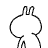
更快速的分享
- 透過這種放話條款，著作權利可以更快速的分享出去
- 原作者 王卯卯的BLOG
- 著作權宣示：使用於個人用途或論壇,但請勿用於商業用途
釋放
安心使用
- 被授權人只要依足這些公眾授權條款規定的
- 就可以安心使用條款授與的權利
遊戲規則
PUBLIC DOMAIN
- 其實所有的著作權客體都可能因為期間經過的關係成為PUBLIC DOMAIN，就是俗稱的公共財
- 像是紅樓夢、西遊記、莎士比亞劇本這些流傳已久的著作
(1)期間經過
e.g
- 像是佛書助印常常註明「版權沒有．歡迎助印」就是常見的著作權拋棄例子
公共域
- PUBLIC DOMAIN指的是無人可主張權利的公共財
- 這表示任何人都可以不受拘束的任意取用這類著作
PUBLIC DOMAIN
但是太消極
- 但是這是一種消極的等待
- 著作權利原則上要等著作權人死後再加五十年，才會變成PUBLIC DOMAIN
- 原作者 王卯卯的BLOG 著作權宣示：使用於個人用途或論壇,但請勿用於商業用途
消極 
分享及共用需及時
- 強調的是權利的分享及共用需及時
- 權利人可以盡早把自己的著作權利「有條件的」積極釋出給他人使用
- 原作者 王卯卯的BLOG 著作權宣示：使用於個人用途或論壇,但請勿用於商業用途
積極 
应对保護期間過長
- 以救濟現時著作權保護期間過長，知識和創意為財團把持無法共享的弊病
以濟時弊
私人間的契約謀合
- 這類的公眾授權條款，是透過私人與私人間契約謀合的方式
- 不待國家修法，自力救濟式的修正目前著作權法的弊病
自力救濟
法源..
- 這種私人與私人間透過契約謀和來樹立共通性遊戲規則的法源，在於民法裡規定的
- 要約者與承諾者意思表示一致者、契約即為成立。
§153 契約自由 主義
只要不...
- 只要不違背法律預設的禁止行為(僅為例舉)
- 則不論多光怪陸離的契約都可以成立
- §71違反 強制或禁止 規定
- §72違背 公序良俗
- §73不依 法定方式
- ……
§71
- §71違反強制或禁止之規定
- 第4條、死後為之，第8條、5親等血親或配偶為限
- 原作者 王卯卯的BLOG 著作權宣示：使用於個人用途或論壇,但請勿用於商業用途
人體 器官 移植 條例
§72
- §72違背公序良俗
- 1週做3次、一次抵債5萬元
- 原作者 王卯卯的BLOG 著作權宣示：使用於個人用途或論壇,但請勿用於商業用途
性愛 契約 
§73
- §73不依法定方式
- §166-1條：契約以負擔不動產物權之移轉、設定或變更之義務為標的者，應由公證人作成公證書
- 原作者 王卯卯的BLOG 著作權宣示：使用於個人用途或論壇,但請勿用於商業用途
不動產 買賣 
§73
- §73不依法定方式
- 結婚，應有公開儀式及二人以上之證人
- 原作者 王卯卯的BLOG 著作權宣示：使用於個人用途或論壇,但請勿用於商業用途
婚姻 關係 
皆可成立
- 除此之外，不管多光怪陸離的契約內容
- 只要契約雙方同意皆可成立
- 原作者 王卯卯的BLOG 著作權宣示：使用於個人用途或論壇,但請勿用於商業用途
 →
→ 
?
？ → 
!
× → 
原始碼的公眾授權
- 這類的公眾授權條款主要是處理軟體程式原始碼的公眾授權問題
OPEN SOURCE CODES
比較著名耳熟能詳的像是
GPL, LGPL, BSD, MIT,APACHE, MPL, CPL, CDDL
處理文件、音樂、多媒體客體..
- 這類的公眾授權條款主要是處理文件、音樂、多媒體客體的公眾授權問題
OPEN CONTENT MATERIALS
e.g
- 像是偏重文件出版規定的GFDL和多元化配對的創用CC授權條款
GFDL, Creative Commons
那麼、什麼是
OPEN SOURCE CODES?
一般來說、讓軟體的使用者有
- 自由的程式碼，就是Open Source Codes
執行/研究/改良/重製散布
這就是一般俗稱的
- 讓使用者有這四大自由的程式，就可以說是自由軟體的程式碼
四大自由
那麼、什麼是
OPEN CONTENT MATERIALS?
嗯嗯嗯
- 簡單來說、讓文字、音樂、多媒體作品的使用者有
- 自由的著作物，就是Open Content Materials，
- 特別要注意一下，有許多的Open Content Material並不允許使用者直接改作，
- 但基本上不會剝奪使用者研究學習的自由。
閱讀 播放 重製 散布
接下來要切入課程的主軸
- 第二章-自由軟體授權條款及其共通特性
- 介紹自由軟體授權條款的核心觀念
自由軟體授權條款
/ 共通特性篇
所謂自由、文義上來說就是
- 自由軟體顧名思義就是使用上及修改上較傳統私有軟體更具自由度的程式
不受限制不受拘束
傳統的一般市售軟體
- 對使用者帶有許多拘束，它禁止被修改、禁止被重製、也禁止被散布
傳統軟體
RMS
- 始作俑者、最開始提倡四大自由理念的是Richard M. Stallman
- 他是GPL各版本條款的主要撰寫人
軟體自由法律中心
- 也是軟體自由法律中心的主要催生成員之一
- SOFTWARE FREEDOM LAW CENTER
SFLC
程式設計之初
- 其認為程式設計之初、程式原始碼本來就是公開共享的
- 原作者 Ethan (洋蔥酷樂部 )著作權宣示：歡迎使用於個人用途或論壇,但請勿自行加工修改或用於商業用途
公開 共享
其實軟體程式...
- 才被納入美國的著作權保護客體
- 台湾是在1985年跟進，在這之前、軟體程式的原始碼多是公開共享的
1980 年
成為著作權保護客體
- 軟體成為著作權保護客體之後，
- 便可以開始收取軟體授權金，此後商業化軟體漸漸沒有人願意開放自己程式的原始碼
- 原作者 彎彎 著作權宣示：不得自行加工修改或用於商業用途
閉門 造車
從全人類的立場?!
- 若是從全人類共同福祉的立場來看，這樣的現狀真的合理嗎?
合理嗎？
所以RMS提倡
- 所以RMS提倡的是回歸過往，將軟體程式原始碼公開共享
- 才能透過網路社群群策群力的方式，將軟體科技研發的更臻完滿
回歸過往
群 策 群 力
OSSF Support Software Freedom
Free Software
→ 自由 軟體
Freeware
→ 免費 軟體
as「言論自由」
- 舉一段自由軟體基金會的話來說明
- 自由軟體提倡的重點在於軟體的自由不是價格，
- 當別人提到Free Software的Free時，
- 你應該先聯想到「言論自由」這個字，而不是「言論免費」。
Free software is a matter of liberty not price.You should think of "free" as in "free speech ".
!=「言論免費」
- 當我們談到FREE SPEECH的FREE時，我們指的是「言論自由」而非「言論免費」
言論自由 × 言論免費
自由女神
- Statue of Liberty，我們會叫她「自由女神」，而不是「免費女神」
自由女神 × 免費女神
Free Software
- 所以請務必記得，Free Software指的是自由軟體，而不是免費軟體
自由軟體 × 免費軟體
翻成自由軟體
- 一般提到FREE SOFTWARE，會把它翻成自由軟體
FREE SOFTWARE
→ 自由 軟體
OSS
- 談到OPEN SOURCE SOFTWARE時，會翻成「開發源碼軟體」或是「開放程式原始碼軟體」
OPEN SOURCE SOFTWARE
OSS→開放 源碼 軟體
OPEN SOURCE SOFTWARE
OSS→開放程式 原始碼 軟體
認為Free常給人免費的誤解
- 這是因為有些自由軟體的推行者，認為Free常給人免費的誤解
- 所以轉而用Open Source這個最大特色來形容這類軟體
BRUCE PERENS
「開放原始碼」
- 他們認為「開放原始碼」是一種對軟體程式開發更有利的
METHOD OLOGY
可以拿來營利
- 這派的支持者認為OPEN、可以讓程式寫的更好，也可以拿來營利，所以刻意減淡了Free這個字的理念意義
- 而將此類軟體稱為Open Source Software,就是前述的開源軟體、開放原始碼軟體
方法論
FOSS
- 後來有人把Free和Open做結合，變成FOSS這個複合字
- F REE/
- O PEN
- S OURCE
- S OFTWARE
FLOSS
- 歐洲那邊的推動團體，喜歡在中間再加上LIBRE這個代表自由的法文字
LIBRE
FLOSS
FREE/ LIBRE /OPEN SOURCE SOFTWARE
口語上
- 我個人口語上還是偏好直接稱這類軟體為
- 因為中文裡並沒有Free讓人產生誤解為免費的困擾
自由軟體
撰寫學術文章
- 但在撰寫學術文章時，會比較謹慎把它翻成
- 免得徒生爭議和批評
自由 / 開源軟體
自由 / 開放原始碼軟體
其實FREE這個字
- 其實FREE這個字強調「軟體自由」的理念，是一種哲學思考
FREE
→哲學思考
開放原始碼!
- 而開放原始碼OPEN SOURCE這個字，則是對這類軟體的最大特色進行描述
OPEN SOURCE
→ 特點 描述
廣義解釋
- 廣義解釋，不管是FREE SOFTWARE, OPEN SOURCE SOFTWARE, FOSS, FLOSS
- 都可能被中譯為「自由軟體」
Free Software〈自由軟體〉
Open Source Software,
OSS 〈開放源碼軟體/開放原始碼軟體〉
Free/Open Source Software,
FOSS
Free/ Libre /Open Source Software,
FLOSS
相同的授權特性
- 將自由軟體及開放源碼軟體混為一談，除了研究、利用上的兼容並蓄外
- 有時候也是因為它們或多或少具有相同的授權特性
共通特性
會放六句話
- 而所謂的「自由軟體」或「開放原始碼軟體」，通常會放六句話
- 指通常狀態、非放諸四海而皆準
放 六句 話
...
- 一、開放程式 原始碼
- 二、 不特定 授權 對象
- 三、 不限制 使用 地域
- 四、不收取 授權金
- 五、不附隨 擔保
- 六、釋放 四大自由 予後手
第一、
- 這是自由軟體最基本的要求、若是軟體不開放原始碼，則後手幾無研究使用程式的自由，那自然不能稱為自由軟體
一、開放程式 原始碼
e.g
- 舉例來說、像這樣具邏輯性的算式或是程式語言
- 就是程式原始碼
( 1 + 1 ) - 3 - 5 = 1
「源碼」
- 原始碼，英文是SOURCE CODE，有人中譯直接稱為「源碼」
原始碼
→ SOURCE CODE
相對於此、這個
010101010101011101010101
010101010101010101010101
010101010101110101010101
010101010101011101010101
010101110101010101010101
010101000101010101010101
010101010101011101010101
或是這個
0002ffe0 d1 b3 d0 07 5a ca fe fe 1b 42 6b 5a 56 93 25 7a |....Z....BkZV.%z|
00069990 8f 5a 29 6a b7 f0 e6 0e 71 9f 30 05 ca fe 59 99 |.Z)j....q.0...Y.|
0006e510 69 fa 85 71 9a ca fe 59 cc f1 af bd ab 75 04 b3 |i..q...Y.....u..|
000a4460 6f 0d ca fe 57 ea c6 d4 c0 f9 00 a5 f4 27 0f 89 |o...W........'..|
000dc920 ba 34 ca fe 29 99 5d 02 a7 f4 24 20 64 d4 06 05 |.4..).]...$ d...|
000dca20 fa 04 b3 2d ea 6e 37 ea ca fe ae 89 fa 8d 47 e9 |...-.n7.......G.|
000fb6d0 94 7c 63 e1 ba f2 3d 38 a0 e7 04 53 ca fe ca 88 |.|c...=8...S....|
0010bb60 b9 4b e6 ca fe dd 73 30 d3 07 92 50 0a 9f 30 97 |.K....s0...P..0.|
0010e750 70 2a 58 a8 97 7d 4f 2d 4d 2d 2f ca fe 97 09 89 |p*X..}O-M-/.....|
00124a60 36 80 48 de 9f 17 a8 69 46 06 0a ca fe db 47 d0 |6.H....iF.....G.|
00143f00 45 c5 7a ca fe f7 27 48 b9 96 63 d0 f8 e9 c2 a5 |E.z...'H..c.....|
00146a20 22 1e 11 24 8c d8 71 14 f0 3c a9 09 ca fe 95 55 |"..$..q..<.....U|
001624d0 26 ca fe 11 c5 b7 09 7d 28 cf 65 e2 da f4 8f e6 |&......}(.e.....|
00163850 ce ec 1d bf 46 98 e4 83 1d d4 d2 ca fe 88 ab 6b |....F..........k|
0016e260 03 ca fe 71 d2 fb 46 07 5c 1f 87 8f d1 96 7a 86 |...q..F.\.....z.|
00188de0 8f 2f 46 01 a9 6b 32 8a a9 57 ca fe 81 c7 05 91 |./F..k2..W......|
00188e90 39 e7 52 48 89 ca fe da ba 73 ff 46 d4 0b 28 a4 |9.RH.....s.F..(.|
00197950 07 d1 0a a5 45 df a0 57 de ca fe 29 f8 ac c0 5c |....E..W...)...\|
0019c620 af 76 e8 07 c3 98 b2 12 22 af 0c 63 ca fe cf e2 |.v......"..c....|
001b3e50 ca fe de 97 e4 2f 5b dc 29 b2 36 d7 31 36 b1 22 |...../[.).6.16."|
001e7120 8e e2 25 5a ca fe 5a 0d e7 77 c3 24 4f 37 5a 63 |..%Z..Z..w.$O7Zc|
001f44c0 50 7a ca fe 69 f5 12 8c 99 c2 ea 48 40 e0 6e 88 |Pz..i......H@.n.|
001f8ff0 36 7b 09 a2 7b 42 59 0e be 65 c0 ca fe 20 00 39 |6{..{BY..e... .9|
原則上包括安裝資訊
INSTALL INFORMATION
所有讓後續使用者能夠簡便
- 程式架構及編寫邏輯的資料，都算得上是程式原始碼的內容
看懂
基础权益
- 因為透過程式原始碼才能讓使用者有機會看懂程式的運作邏輯
- 使用者也才有研究、改良這個程式的機會
研究. 改良
第二/三:共通
- 自由軟體第二、三個共通特點是
- 這二個特點的理由相近
- 二、 不特定 授權 對象
- 三、 不限制 使用 地域
那是因為...
- 王卯卯的BLOG
- 原作者王卯卯著作權宣示：使用於個人用途或論壇,但請勿用於商業用途
愛 
烏托邦式的
- 原作者想把程式盡量提供給「最多人」使用
- 原作者 王卯卯的BLOG 著作權宣示：使用於個人用途或論壇,但請勿用於商業用途
大愛
至於
- 大抵就是為了鬆脫程式前手對後手授權金的束縳，進而達到方便網路散布、促進市場佔有的目的
四、不收取 授權金
不表示...
- 不收取軟體授權金，不表示所有名目的金錢營收都沒辦法
授權金
≠
所有收費名目
像是高速公路
- 其實自由軟體像是高速公路一樣
- 以FREE為字首、但仍然常態性的可以有收費的動作
FREE WAY
嗯嗯嗯
- 那既然如此、幹嘛不名正言順的收授權金就好了???
- 還要避開這個授權金的名稱另外想辦法巧立名目?
WHY?
收取制度!
- 那是因為當代的授權金收取制度，被傳統商業軟體公司運用的淋漓盡致，像賦稅制度一樣
- 可以逐年逐次收取，而一再拘束被授權人使其不得自由
賦稅. 濫用
像賦稅制度時..
- 當權利金這個收費方式被變相利用的像賦稅制度時有多可怕?
TAXES?
諺語
- 看這個、西方的諺語常常把DEATH和TAXES當相近的二件事來作描述
DEATH and TAXES
確然無疑的...
"'In this world nothing can be said to be certain,except death and taxes ."
像賦稅制度!
- 權利金若是被軟體授權者使用的像賦稅制度一樣，就會造成使用者
難以逃避的 拘束力
e.g.
WINDOWS 95 WINDOWS 98 WINDOWS XP WINDOWS VISTA
逐年計次繳費..
- 這類型的授權金利用方式就像是牛環、馬轡一般，
- 被授權人得逐年計次繳費，甚至付費升級，更別想會有什麼深入的研究、修改、重製、散布的自由
牛環. 馬轡
一直強調!
- 所以自由軟體為什麼一直強調不能收求授權費用?原則上就是為了替使用者
- 鬆脫掉軟體授權金賦稅式的拘束力
鬆脫束縛
e.g
- 舉例來說，A公司將自由軟體散布給B公司，約定授權費用每年為100萬元，這是不被自由軟體授權通則所允許的
- 因為這樣一來B公司並沒有充份的自由去利用這個軟體，
- 設想若是隔年B公司不再付授權金費用給A公司，那它就不能將這個前年已經得到的軟體繼續做成產品販售給C
× A公司→B公司
(＄99萬 授權金 /year)
× A公司→B公司→C消費者
(隔年)
;-)
- 但是如果這個收費名目是「服務費用」，那就符合自由軟體的自由散布原則
- 因為這種收費模式並不妨礙隔年後B公司繼續用此軟體製成產品販售出去，A雖然一樣向B收費，但兩者之間的拘束性並沒有那麼強
○ A公司→B公司
(＄99萬 服務費 /year)
○ A公司→B公司→C消費者
(隔年)
嗯嗯嗯
- 甚至B公司還可以彈性逐年選擇不同的合作對象
- 從這個例子就可以清楚看到，
- 為什麼多數的自由軟體皆主張授權者不得收求授權金名目的費用，因為就是要把自由散布的理念真正的落實下去
[A]公司→B公司→C消費者
(＄ 99 萬服務費/year)
[D]公司→B公司→C消費者
(＄ 80 萬服務費/year)
[A]公司→B公司→C消費者
(＄ 90 萬服務費/year)
[E]公司→B公司→C消費者
(＄ 60 萬服務費/year)
不負擔保!
- 自由軟體的第五個共通特性，是
- 白話就是「無受利益、不負擔保」的意思
五、不附隨 擔保
無償導致...
- 因為法律條款上無償通常導致可得卸責
- 原作者 輔大猴 採用Creative Commons「姓名標示-非商業性-禁止改作台灣2.5版」授權條款
無償 → 卸責
e.g
- 就像學生自助餐廳裡，免費的因為它是用送的…
- 原作者 洋蔥酷樂部 著作權宣示：歡迎使用於個人用途或論壇,但請勿自行加工修改或用於商業用途
豬血 湯裡沒 豬血
无金錢好處
自由軟體→ 無償 釋出
↓ 卸責 ←免責條款
再釋放
- 自由軟體最後一個共通特性、就是釋放
- 給得到程式的後手
六、 四大自由
當代除了軟體程式碼的
- 用自由軟體授權條款來釋出外，還有很多其他的著作權客體也用相近的遊戲規則在運作著
SOURCE CODE
<brief/>
- 5' 有关
- 10' 知识产权
- 10' 自由文化
- 10' 许可分类
- 10' 自由软件
- 10' 深入GNU
- 10' 协议选择
- 10' 现实冲突
- 10' 商用模式
其它客体
- 這些客體包括文學著作、照片圖畫、音樂媒體、影像檔案等等
- 也有OPEN給一般公眾的需求
CONTENT MATERIAL
像是GNU自由文件授權條款
GNU Free Documentation License,
GFDL
矯矯者
- 以及創用CC授權條款，便是其中取用者非常多的矯矯者
Creative Commons, CC
都是
- 前面提到這類的公眾授權條款都是
- 原作者 輔大猴 採用Creative Commons「姓名標示-非商業性-禁止改作台灣2.5版」授權條款
放話條款
權利人
- 原來的權利人向大家公開放話
- 原作者 輔大猴 採用Creative Commons「姓名標示-非商業性-禁止改作台灣2.5版」授權條款
放話
e.g
- 這種放話條款其實早在10年便行之有年，
- 但當時多還停留在Freeware(免費軟體)或是Shareware(共享軟體)的層次，
- 相關的軟體授權法律關係還不算複雜
- 因為Freeware及Shareware並不容許使用者修改，所以也沒有衍生作品或是軟體再授權的問題
中國象棋v.1.0
當代的公眾授權
- 而當代的公眾授權條款與前最不同者
- 就是加入了一個唱反調的COPYLEFT反動概念
COPY LEFT
COPYLEFT目前譯名仍未統一
公共版權
反版權版權無
版權向 左
因為
- 因為COPYLEFT其實奠基在COPYRIGHT的制度之下
- 其創立的目的並非瓦解現行的著作權體制，而是帶種一種輔弼輔佐的修正態度
著 作權下
輔弼輔 佐
COPYLEFT理念
- 支持者仍然主張原著作權人擁有作品的COPYRIGHT
與傳統模式..
- 但運用的方式與傳統模式大異其趣，是較另類的著作權運用模式
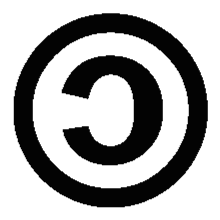
COPYLEFT強調
- 簡單來說、COPYLEFT強調的是權利人保留部份權利的概念
- 其權利人本擁有著作物的所有運用權利，
- 卻預先釋出部份權利，並且要求收受程式的後手和他奉行同樣的遊戲規則
SOME RIGHTS RESERVED
COPYLEFT效果
- 而COPYLEFT的效果表現在，作品著作權人對於收受作品後手的特性
- 原作者 王卯卯的BLOG 著作權宣示：使用於個人用途或論壇,但請勿用於商業用途
向後拘束 
原始權利人..
- 亦即程式的原始權利人，設立一些
- 來拘束被授權的後手使用作品的態樣與限制
預設規則
不斷再改变
- 並透過授權條款，讓這些預設規則
- 下去拘束收受作品的後手、後後手、後後後手等
不斷傳散
向收受人要求
- 作品的原始著作權人，向收受程式的後手要求
- 原作者 王卯卯的BLOG 著作權宣示：使用於個人用途或論壇,但請勿用於商業用途
請你和我
這樣 說 
請你和我..
請你和我
這樣 做
悄悄話..
- 這也像是小朋友的悄悄話一樣
- 原作者 波蘿麵包，免費試吃中 著作權宣示：使用於個人用途或論壇,但請勿用於商業用途
耳語
我的秘密...
我的秘密和 你 講
你 不要 和 別人 講
我的作業
我 的作業借 你 抄
你 可以 借給 小狗 抄
但 不能 借給 小貓 抄
「不可撤回」
- 特別要提醒的是，當代具有COPYLEFT性質的公眾授權條款，也多具有「不可撤回」的特性
- 意思是原權利人以這種方式將權利授權出去，嗣後不能恣意撤回。
IR REVOCABLE
違反即失去
- 可以說已經丟出去給人用的東西，除非別人違反授權條款的規定而失去權利
- 不然原來的授權人不能任意把授權出去的權利要回來，但是可以用不同的條件重新授權
逝者己矣．覆水難收
與傳統相悖
- 第2、但其運用方式與傳統權利人保留所有權利的方式相悖
- SOME RIGHTS RESERVED
传递不变
- 第3、後續運用作品之人皆須遵守權利人預設的遊戲規則
- DO AS WHAT
I TOLD
運作邏輯
- 所以運作邏輯簡單來說就如下圖
- 從ALL到SOME，然後事先說明被授權人哪些事能做、哪些事不能做
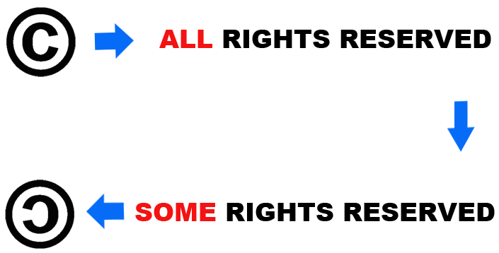
期刊/論文/音樂/影像/圖片分享方面
- 愈來愈受重用的Creative Commons創意公用授權條款
C reative C ommons
創意公用授權條款
- 第一節-Creative Commons創意公用授權條款
- 說完核心COPYLEFT的觀念後，下面的部份要介紹近年在期刊論文、音樂媒體、影像圖片分享方面，
「創用CC」
- 我们的官方譯名是「創用CC」，我們創造、我們利用、我們嘻嘻哈哈
CC
- 讓文件、音樂、影片媒體的著作權人把權利下放，並透過標章的方式讓使用者更簡便的了解到這些作品的遊戲規則
都是
- 前面提到這類的公眾授權條款都是
- 原作者 輔大猴 採用Creative Commons「姓名標示-非商業性-禁止改作台灣2.5版」授權條款
放話條款
權利人
- 原來的權利人向大家公開放話
- 原作者 輔大猴 採用Creative Commons「姓名標示-非商業性-禁止改作台灣2.5版」授權條款
放話
第一種、
- 讓一般人簡明易懂、一目了然的知道CC授權的著作物能被如何的利用
(1) 授權標章
( Commons Deed )
第二種、
- 這是著作物的利用方式未來有所爭議時，在進行法律爭訴時據以為準的詳細法律文字
(2) 法律條款
( Legal Code )
第三種、
- 供給機器辨讀的數位後設資料metadata，讓CC授權的作品更容易讓別人搜尋查找，進而加值共工利用
(3) 數位標籤
( Digital Code )
四大標章的第一個
- 四大標章的第一個，這是姓名標示，圖形是一個人很自負的站在那裡
 姓名標示
姓名標示
( Attribution )
含义
- 姓名標示-這個標章代表著作權利人希望收受作品的後手，日後使用或再散布作品時須保留其姓名標示
創作人允許他人對其受著作權保護的著作及衍生著作進行:
- 重製、散布、展示及演出等利用行為，
- 但前提是對方必須 保留創作人的姓名標示 。
預設值
- 譬如電影「海角七號」中很愛現的「茂伯欸」-此圖片取用於網際網路
- 「姓名標示」這個標章就是一種愛現的顯名主義，這個標章是CC授權的預設值，
- 六種組合裡都有姓名標示的基本值-援引台湾著作權法第52條及65條主張為學術推廣而合理使用
第二個標章，這是非商業性
 非商業性
非商業性
( Non-Commercial )
含义
- 這個標章任何人得到此一作品皆有權利利用它，但前提是此一利用範圍限於非商業性目的的使用方式
創作人允許他人對其著作及衍生著作進行:
- 重製、散布、展示及演出等利用行為，
- 但僅 限於非商業性目的 。
非商業性
- 把錢關在禁止標誌裡不能動，就像電影「魔鬼剋星」把幽魂關在禁止標誌裡一樣-此圖片取用於網際網路
- 援引台湾著作權法第52條及65條主張為學術推廣而合理使用
第三個標章，這是禁止改作
 禁止改作
禁止改作
( No Derivative Works )
含义
- 這個標章表示任何人得到此一作品皆有權利利用及再散布它，唯前提是不得改作產生衍生著作
創作人允許他人原封不動地對其著作進行:
- 重製、散布、展示及演出等利用行為，
- 但 不得產生衍生著作 。
禁止改作
- 因為有時你釋出作品是希望別人不要去修改它的，
- 就像蝙輻俠的作者應該不會希望蝙輻俠與羅賓被修改成一對戀人
- 此圖片取用於網際網路
- 援引台湾著作權法第52條及65條主張為學術推廣而合理使用
第四個標章
 相同方式分享
相同方式分享
( Share Alike )
含义
- 這個標章原則上就是COPYLEFT的意思，
- 但多一個倒勾更強調生生不習的互惠循環，利用此一作品者，須採用與原著作相同或相容之授權條款
只有當他人將衍生著作 採用 與創作人的
- 原著作相同或相容之授權條款 時，
- 創作人才允許他人散布其衍生著作。
概念互斥
- 那麼、因為「禁止改作」與「相同方式分享」這兩個概念互斥
VS
第一種、姓名標示
- 利用人只要依照著作人指定的方式標示姓名，
- 就可以自由利用、自由分享著作，這是對利用人而言最自由的授權條款。
烏托邦式
- 所以、這也是一種烏托邦式
- 的授權方式，原作者想把作品盡量提供給最多人使用
- 原作者 王卯卯的BLOG 著作權宣示：使用於個人用途或論壇,但請勿用於商業用途
大愛
第二種、姓名標示-非商業性
- 利用人只要依照著作人指定的方式標示姓名，
- 且在非商業性用途下，
- 就能自由使用、自由分享或改作原著作。
第三種、
- 姓名標示-非商業性-相同方式分享
- 利用人只要依照著作人指定的方式標示姓名，且在非商業性用途下，
- 就能自由使用、自由分享或改作原著作，
- 但改作後的衍生著作，必須採用與原著作相同或相容的創用CC授權條款。
術分享
- 附帶一提、這三個標章的組合，有很強的學術分享習氣
- 所以也為國外多數的大專院校開放式課程講義所選用
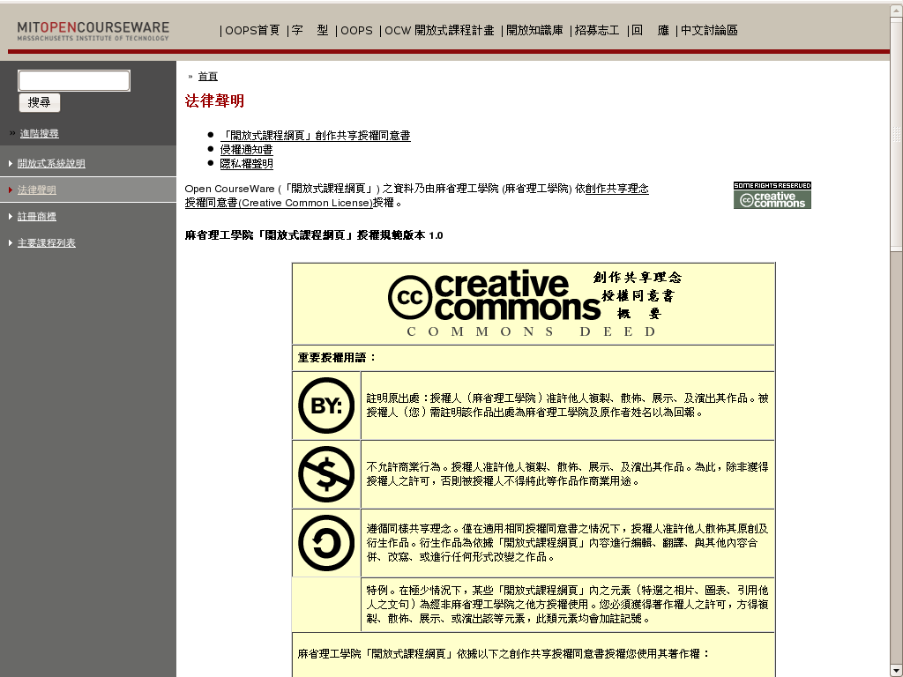
第四種、姓名標示-非商業性-禁止改作
- 利用人只要依照著作人指定的方式標示姓名，
- 且在非商業性用途下，
- 就能自由使用、自由分享原著作，但不可以改作。
第五種、姓名標示-相同方式分享
- 利用人只要依照著作人指定的方式標示姓名，
- 就可以自由利用、自由分享著作，
- 但若將此著作改作成衍生著作，
- 必須採用與原著作相同或相容的創用CC授權條款
第六種、姓名標示-禁止改作
- 利用人只要依著作人指定的方式標示姓名，
- 就可以自由利用、自由分享該著作，但是利用人不可以改作原著作。
手冊...
- 手冊網址：http://creativecommons.org.tw/static/handbook/2007
- 上列圖片採用 創用cc「姓名標示-相同方式分享2.5台灣」授權條款釋出
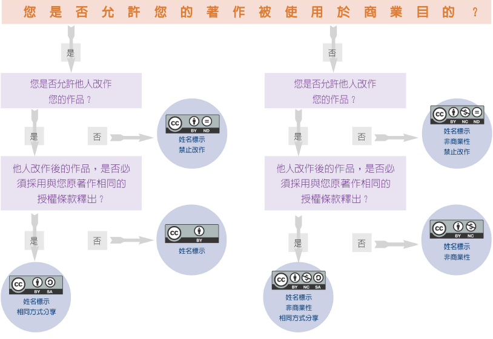
- 呂靜雯、黃泰然、魏瑀嫻、王佩儀、陳奕全(編)，
- 《創作分享．快樂使用：簡介創用CC授權》。
- 台灣「創用CC」計畫製作。
- 教育部電子計算機中心及中央研究院資訊科學研究所發行。
- 2007年11月。
決定授權方式之後
- 那麼決定授權方式之後、著作人要
- 自己的作品是以CC授權的方式釋出呢？
如何 標識 ?
e.g
- 就像這份簡報、一開始的封面右下角就表明是以CC某個條款進行授權，
- 這就是開宗明義的「說清楚」
- 此份講義採用Creative Commons
- 「姓名標示–非商業性–相同方式分享台灣2.5版」授權條款
- 動畫原作者 王卯卯的BLOG 著作權宣示：使用於個人用途或論壇,但請勿用於商業用途
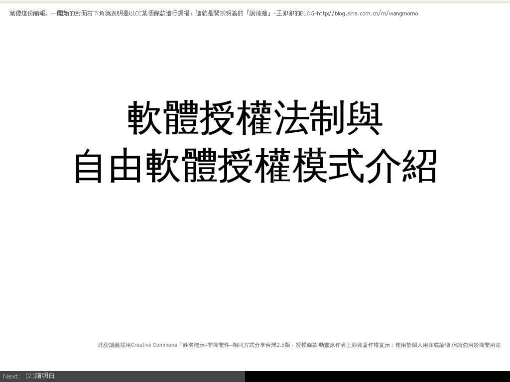
內嵌
- 如果條件許可，
- 可以在作品內嵌入CC授權條款的授權標章或法律條款
- 讓作品的使用者可資查找這是哪一類的CC授權模式，
- 不致誤解了個別作品的授權內容
內嵌連結
GNU自由文件授權條款
- 簡介完Creative Commons的組合方式後
- 下面的部份要利用CC的授權概念來
- 介紹GNU計畫用來出版軟體說明文件的GFDL
GFDL
以GNU為頭
- GFDL其實就是一般文件檔案裡的GPL授權條款
- 因為這些文件無法直接適用GPL授權條款來適出，
- 所以重新寫了一個GFDL來做文獻釋出。
系出名門
著作權客體
- GFDL針對的是GNU計畫裡無法用GPL釋出的其他著作權客體，
- 其中大部份是書籍資料，軟體操作說明書等。

第一個重點
- GFDL近似於創用CC授權條款裡的「姓名標示-相同方式分享」：
- 意思就是取用GFDL的作品，只要保留原作者的顯名聲明，
- 則使用者可以自由地修改、散布這個作品，甚至進行商業營利，
- 但重製或是修改後的作品，一定還是得用GFDL來進行授權。
四個子項
- 所以GFDL的第一個重點就包含了四個子項
- 第一、使用GFDL來授權的作品是可以被使用者修改、改作成新的衍生作品的
1.可修改
四個子項
- 第二、使用GFDL來授權的作品可以被使用者自由地重製、散布，無論這個作品有沒有經過改作
- 或者說，不論是未經修改的原作或是被改作後的衍生作品，都可以被使用者自由地重製散布給其他人。
2.可散布
四個子項
- 第三、使用GFDL來授權的作品可以被使用者拿來進行商業牟利
- 但是仍然不允許使用者收取軟體授權金費用
3.可商業
目的
- 之所以一再強調不能收求授權金費用?只是為了替使用者
- 鬆脫掉著作權授權金賦稅式的拘束力
鬆脫束縛
!==免費軟體
- 實質上自由軟體就是不等於免費軟體，
- 這個概念一直從GPL延申到GFDL
自由 軟體≠ 免費 軟體
收費名目
- 所以GFDL釋出的作品還是可以拿來進行商業利用
- 只是這個收費名目不能是強質拘束力的著作權授權金
軟體授權金 ≠ 所有收費名目
可收費
- 前面提到、GNU計畫下的自由軟體其實像是高速公路一樣
- 以FREE為字首、但仍然常態性的可以有收費的動作
FREE WAY
四個子項
- 而第四、GFDL類比創用CC-BY-SHAREALIKE的最大特點
- 就是它也有非常強質性的COPYLEFT性質，美國國防部稱此為授權攫取性。
4.可传染
传染性
- LICENSE CAPTURE描述的是，
- 一旦用到GPL程式的CODE，或是拿GFDL授權的作品來改作，
- 其後的作品在授權方面的選擇自由就被「捉住了」，
- 改作之人後續再散布改作物時，只能選用原來的授權條款。
LICENSE CAPTURE
適用對象
- 而認識GFDL的第二個重點、就是它的適用對象目前主要是對「文字著作」，
- 包括軟體使用手冊、教科書、參考資料、及各式操作指南等文字作品，
- 雖然未來新版的GFDL已針對音樂、錄影、多媒體等著作物在規劃更合適的條款，
- 不過目前的版本主要是適合文字著作的授權釋出。
文字著作
排版和印刷
- 認識GFDL的第三個重點、在於它對於書籍排版和印刷出版方面有比較細節的規定
排版/出版規定
附文
- 次要章節指的是描述作者與文件主題關係的其他附錄，但不可包含文件本文的相關內容。
2.次要章節
( Secondary Section )
固化附文
- 至於「恆常章節」就是被原作者指定不得增刪修改的「次要章節」，
- 被指定為恆常章節的文字不可被原作者外的使用者修改或刪除。
3.恒常章節
( Invariant Section )
封面
- 出版印刷方面，GFDL要求封面上須直接聲明作品是以GFDL授權釋出
- 前封面文字的長度不得逾5字，後封面文字的長度不得逾越25字，
- 並且每一次散布GFDL文件本文，都要夾附一份GFDL授權條款全文給收受作品的人。
- 1.前封面文字(Front- Cover Text)
- 2.後封面文字(Back- Cover Text)
散布格式
- GFDL的第四個重點: 就是它要求文件的散布格式必須是Transparent的透明格式，簡單來說就是文件的格式必須一般常見軟體都可以編輯
格式透明
( Transparent )
- 要求文件的格式透明化相當於自由軟體中的程式原始碼，
- 這個概念是為了確保文件可以易於被他人修改，其實創用CC裡也有相類的概念。
第四章
- 接下來將主題回歸到自由軟體授權條款，
- 關於自由軟體授權狀態的梗概，可益參考下列這張「軟體授權拘束線性圖」
- 由左而右代表拘束力由弱到強，
- 接下來會用這張圖來解釋自由軟體授權條款的三大分類
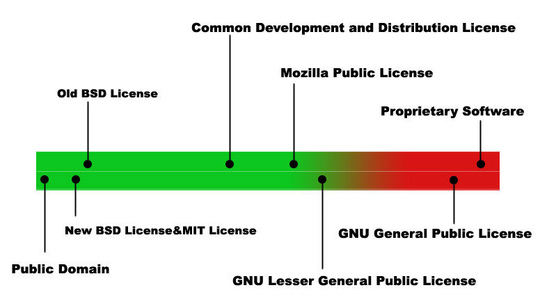
<brief/>
- 5' 有关
- 10' 知识产权
- 10' 自由文化
- 10' 许可分类
- 10' 自由软件
- 10' 深入GNU
- 10' 协议选择
- 10' 现实冲突
- 10' 商用模式
分类
- 一般常見有人將自由軟體授權條款分為GPL類、BSD類及其他類別
- 1、GPL類
- 2、BSD類
- 3、其他類(MPL/CDDL)
三種態度
- 用比較直覺式的說法，這其實代表了軟體使用上的三種態度
- 1、大家的自由
- 2、無拘無束的自由
- 3、有點自由又不會太自由
大家的自由
- 大家的自由指的是GPL類的自由軟體授權條款
- 這類的條款要將研究、改寫軟體的自由不被阻斷的一直傳散下去
1、大家
→ GPL 類
無拘無束
- 無拘無束的自由指的是BSD類的自由軟體授權條款
- 這類的條款對使用者的要求非常的少，少到幾乎使用者可以拿軟體來進行任何方面的利用
2、無拘無束
→ BSD 類
折衷
- 有點自由又不會太自由，指的是不入上列二門的其它類型自由軟體授權條款，這類的授權規則編寫多是有一些目的性
- 如MPL、CDDL算是由預留商業利用空間的基金會或是商業公司所編寫，他們想在GPL與BSD之間找到一條折衷的第三條路
3、折衷
→ 其它類
GPL類
- 三分法的第一類，由圖的右邊數來第二位、拘束性非常強的是
- GPL類的授權條款，GNU GENERAL PUBLIC LICENSE
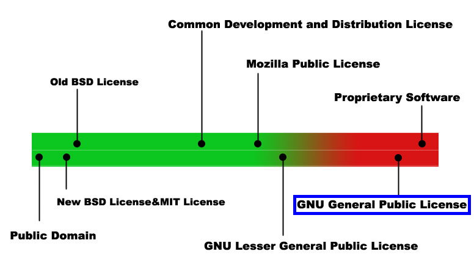
比例非常高
- 別的授權條款，其對使用者的拘束性非常的強，但其在自由軟體程式裡的運用比例非常的高
GPL 類
鮮肉網統計
- 根據鮮肉網-freshmeat網站的統計和分析，光GPL本身的市佔比率就接近六成五
65％
GPL類
- GPL類的軟體雖仍主張原著作權人的COPYRIGHT
COPYLEFT
- 但運用的方式與傳統模式大異其趣，是屬於唱反調方式的 COPYLEFT
COPYLEFT
- 之前談到，COPYLEFT性質的公眾授權條款強調的是
- 權利人保留部份權利的概念
SOME RIGHTS RESERVED
強調
權利人本來擁有著作物的所有運用權利，卻預先釋出部份權利，並且要求收受程式的後手和他奉行同樣的
遊戲規則
請你和我
- 程式的原始著作權人，向收受程式的後手要求
- 原作者 王卯卯的BLOG 著作權宣示：使用於個人用途或論壇,但請勿用於商業用途
請你和我這樣 說
嗯嗯嗯
- 原作者王卯卯著作權宣示：使用於個人用途或論壇,但請勿用於商業用途
請你和我這樣 做
思考流程
- 所以它的思考流程簡單來說就是，從「權利人保留全部權利」推廣到「權利人保留部份權利」，
- 然後事先律定被授權人哪些事是能做的、還有哪些事情是不能做的。
嚴格!
- 而GPL類型軟體運用COPYLEFT的方式非常嚴格，在GPL並不允許使用者增刪條款本文任何一字，所以常被戲稱為
- 這是一個對GPL類程式所具有的COPYLEFT特性較偏負面的用語，但是言簡易賅、很好理解
VIRAL
授權攫取
- 美國防部(委託MITRE公司所作)的報告稱此為
- 授權攫取性
LICENSE CAPTURE
GPL僵屍
- 一般程式只要被GPL僵屍噬咬了一口，無論咬在
- 頭、頸、手、胸、腳趾頭或身體的任何一個部位
頭、頸、手、胸、腳趾頭或其它……
只要這口咬得夠大口
- 這個程式就會被GPL化，再散布時就要受到GPL授權條款的拘束。
GPL ed
嗯嗯嗯!?
- 是不是真有這麼可怕?
- 現在暫且打住，後續的課程會分析的更清楚一點
- 援引台湾著作權法第52條及65條主張為學術推廣而合理使用
- 此圖片取用於網際網路
BSD類
- 而三分法的第二類，圖表落點最左邊稍微向右移一點
- 就是以BSD類型授權條款釋出的軟體
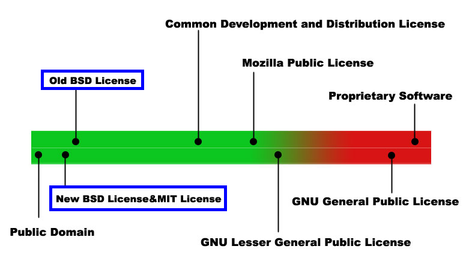
BSD/MIT類
- BSD/MIT類型的軟體、其著作權人仍然保有作品的著作權利，
- 軟體的使用者雖不至於真正無拘無束但從實而論、已幾近是無拘無束
BSD 類
二句型BSD
- 舉例來說、二條款類型的BSD條款只規定使用者
- CD兩項義務性要求
C + D
C就是「著作權聲明」
C OPYRIGHT NOTICE
使用者只要註明
- (1)寫作年份、(2)著作人是誰，就是一個完整的著作權聲明
COPYRIGHT YEAR COPYRIGHT HOLDER
簡單來說就像這樣
COPYRIGHT 2008 林誠夏
免責條款就是
- 的意思；意即編寫自由軟體之人並未收受使用者實質的金錢好處，所以出了事請別找他
無受利益
不負擔保
嗯嗯嗯
- 就是之前一直說的、免費的豬血湯裡通常不會有豬血
- 免費的豬血湯沒有豬血請不要和老闆要，因為那就是免費的-原作者Ethan著作權宣示：
- 歡迎使用於個人用途或論壇,但請勿自行加工修改或用於商業用途
豬血 湯裡沒 豬血
除此之外
- 除了這二項規定之外、BSD類軟體的使用者幾乎可以對程式進行任何方式的利用
- 改了BSD程式後你要將程式原始碼封閉起來也行，BSD授權條款給予後手的是
ALMOST EVERYTHING
相對於此V
- 相對於此，就能了解它與GPL類型
- 的自由不同，GPL類型的軟體是要讓大家都有一樣等價的改作自由
推己及人
如果認同
- 如果你認同我的想法，就請跟隨我。
- 這是GPL類型的精神號召，口白取自電影「盧貝松之聖女貞德」
"Follow Me if you Love Me！"
～聖女貞德(1412～1431)
真愛
- 如果你真心的喜愛某些人事物，就應該讓他們有不受拘束、自由發展的機會，那才是真愛。
- 這是BSD類型的寬容態度，取自著名英美歌手Sting的歌名
"If You Love Somebody Set Them Free "
～Sting(1951～)
其它類別
- 而自由軟體除了這二大類型之外
- 還有許多走中間路線的調和類型座落其中
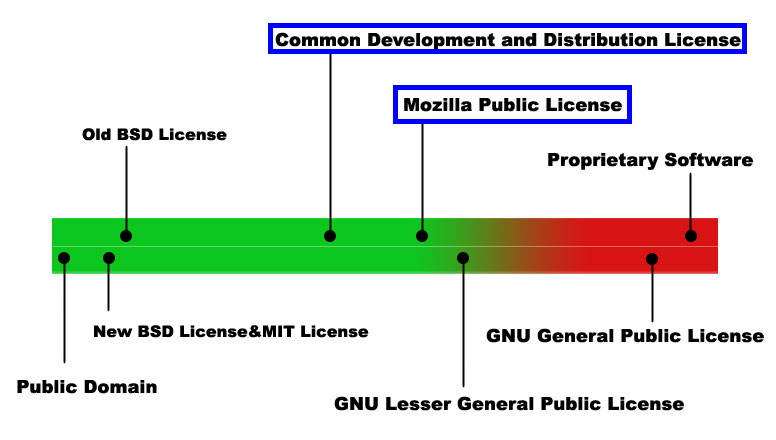
Mozilla / Sun
- 像Mozilla Public License和昇陽寫的CDDL
- 這類的自由軟體部份特性偏向於GPL、部份特性偏向於BSD，可以說不列入前二類者都算是其他類型
MPL/
CDDL
GPL加上LGPL
- 而鑑於GNU計畫下授權條款傾斜式的高市佔率
- GPL加上LGPL所佔的軟體佔自由軟體世界近七成之譜
70％
其實就是
- 很多人對於自由軟體運用上的諸多疑問，其實就是GPL和LGPL條款如何運用的問題
- 所以以下開闢特章來講解這部份的問題
GNU 特章
<brief/>
- 5' 有关
- 10' 知识产权
- 10' 自由文化
- 10' 许可分类
- 10' 自由软件
- 10' 深入GNU
- 10' 协议选择
- 10' 现实冲突
- 10' 商用模式
深遠影響
- 關於GNU計畫的緣起和設立目的
- 影響最深遠的就是下列這個重要的人和擦槍走火的這件事
人/事
人、是RICHARD STALLMAN
- GPL各版本條款的主要撰寫人，
- 自由軟體基金會的創建者，
- 軟體自由法律中心的主要催生成員
少年時期
- 在RMS的少年時期，軟體程式原始碼原則上都是的
- 原作者 洋蔥酷樂部 著作權宣示：歡迎使用於個人用途或論壇,但請勿自行加工修改或用於商業用途
公開共享
不提供原碼
- 慢慢的許多軟體廠商開始不提供程式原始碼
- 原作者 彎彎 著作權宣示：不得自行加工修改或用於商業用途
閉門造車
HACKER
- 而這樣的演變對於RMS這類的HACKER產生一定程度的衝擊
- 因為本來都能看得到的程式原始碼，漸漸變得看不到了
囧
印表機事件
- 在這種原有權利漸被剝奪的感觸下，最後終於
- 引發下列的印表機事件
擦槍 走火
當時Xerox–全錄公司
- 贈送了一台新式雷射印表機給實驗室，
- 卻沒有給驅動程式原始碼，而這台印表機的批次列印及排序等候常有問題
XEROX
HACKER
- 但因為缺乏驅動程式原始碼之故
- 即使RMS本身是軟體HACKER也無法自行改善這個窘境
無力改善
RMS
- 並且要了以後XEROX還是不給這個驅動程式原始碼
- 原作者 王卯卯的BLOG 著作權宣示：使用於個人用途或論壇,但請勿用於商業用途
RMS怒了!
- 從此開始、RMS終於翻臉走上了提倡軟體自由理念的不歸路
o(╬￣皿￣)=○
RMS
- 他認為得到軟體之人，不論得到的是目的碼格式或是原始碼格式，都應該對其擁有
- 四個方面的權利和自由
研究 修改 重製 散布
GPL的英文全名是
- 所以簡稱GPL，它是GNU計畫所主力推廣適用的「公眾授權條款」，授權適用對象是軟體程式碼
- GNU
- G ENERAL
- P UBLIC
- L ICENSE
之前談到
- 就是寫了很多事、說了很多話，GPL授權條款裡面規定了很多的權利義務關係
條款
提綱挈領
- 為了幫助提綱挈領簡單了解GPL的授權內容
- 下面會用最深入淺出的方式來介紹GPL授權條款
化繁為簡
濃縮成
- 其實從理念觀點出發，GPL授權條款可以很簡單的濃縮成
二個要點
有資格
- 得到GPL程式OBJECT CODE的人、就有資格得到程式的SOURCE CODE
[OBJECT CODE]
→ [SOURCE CODE]
嗯嗯嗯
得到GPL程式目的碼的人、就有資格得到程式原始碼這句話，可以說就是GPL授權條款的根本核心價值
核心
e.g
- 回到讓RMS怒上梁山的全錄印表機事件
- 這個事件解釋了RMS推動自由軟體運動的初衷
XEROX
羞辱
- 簡單來說就是因為HACKER想要修改印表機的驅動程式
- 就RMS的觀點來看，軟體若是只能使用而無法修改，
- 是羞辱了使用者的智慧和自由，而修改程式的大前提、就是得得到程式的source code
想改卻 不能改
一再強調
- 所以GPL授權條款一再強調，得到程式目的碼的人就有資格取得程式原始碼
OBJECT CODE
→ [SOURCE CODE]
有原碼才有機會
- 而得到原始碼的人，才有機會得到深化運用程式的四大自由
SOURCE CODE
→ [FREEDOM]
原則
- 在這個原則之下，只要得到GPL程式，就可以得到它的程式原始碼，進而得到使用、研究、修改、再散布程式的自由
GPLed
→ [原始碼]
→ [軟體自由]
進一步推論
- 愈多的GPL程式，就代表更多使用者有機會得到軟體自由
[MORE] GPLed
→ [MORE] FREEDOM
設計擴散機制
- 所以、RMS也為GPL授權程式設計了擴散機制，或是被俗稱為感染性的機制
- RMS認為只要讓更多程式是以GPL來授權的，就更能落實軟體自由的理念
擴散機制
/ 感染性
第二要點
- 所以GPL授權條款內含最重要的第二要點，可說就是感染性的原則與例外
感染性
原則 / 例外
共產主義
- GPL授權條款、常常有人戲稱它是共產主義
- 此圖片取用於網際網路
- 援引台湾著作權法第52條及65條主張為學術推廣而合理使用
強迫
- 因為它強迫使用GPL程式碼的其它軟體都得遵守同樣的
遊戲規則
感染性
- 援引台湾著作權法第52條及65條主張為學術推廣而合理使用
- 這個所謂的-此圖片取用於網際網路
感染性
要是被GPL僵屍咬到
- 這個程式就會被GPL化，再散布時就要受到GPL授權條款的拘束。
GPL ed
授權攫取性
- GPL的授權攫取性，也是有它的原則和例外的
- GPL授權條款的內容有說明什麼樣的程式碼利用方式要被它所拘束、什麼程度之下是不用被拘束的
原則 / 例外
取用
- 原則就是只要其他程式取用GPL程式一部份
- a work containing the Program or a portion of it
PORTION
這個程式就被GPL了
- 往後再行散布時，就只能夠以GPL為再散布時的授權條款
GPL ed
后果
- 修改原本是GPL授權的程式，修改完的成果當然還是得用GPL來授權
A( GPLed )
→A°( GPLed )
加入
指的是取用GPL授權程式一部份的程式碼，加到自己的軟體裡，這樣一來最後的成果也只能用GPL授權條款來散布
A+B-portion
( GPLed )→A°( GPLed )
后果
把自己寫的軟體和GPL授權程式結合在一起運作，彼此密不可分，這時候整個結合成果視為一體受到GPL授權條款的拘束
A+B
( GPLed )→C( GPLed )
相當份量
- 簡單用一句話來解釋這種感染性，就是
- 把整個軟體專案加入相當份量的GPL程式碼，
- 則整個軟體專案就受到GPL授權條款的拘束
一顆 老鼠屎壞了 一鍋 粥
明文!
GPL授權條款也明文、與GPL程式結合的其他程式如果能夠主張自身的
獨立性
只要
- 聲明自己是獨立而可以拆解開的原生程式
- 就可以主張不受到GPL授權條款的拘束
INDEPENDENT and
SEPARATE WORKS
嗯嗯嗯
- 這個細節有很多討論的空間，但原則上非GPL授權軟體得要
自力營生
可以自行運作基本的功能
而除去所結合的GPL程式，這個自行編寫的程式仍然可以自行運作基本的功能，或者能在其他作業平台上運作
2、容許拆解
不結合散布
- 且「盡量」不要和GPL程式結合後合併散布的話
- 這裡用的詞是「盡量」，其實合併散布的例子也有，但是爭議性會比較大
3、分開散布
三個標準
- 滿足上面三個標準，就可以主張這個程式是獨立程式，而不用受到GPL授權條款的拘束
獨立程式
用以上的標準來看
- 程式與GPL程式間若是靜態連結的關係、往往就過不了獨立性的檢測
× STATIC LINK
動態連結
- 而若是改用動態連結的方式、則常常能被接受是不用被GPL程式所感染的
- 當然、這只是一個原則、通說，仍然有些複雜的結合關係不可一概而言
○ DYNAMIC LINK
特別要說明
- 一般人對於GPL授權條款的了解往往存在一個被過度擴張的謬誤
謬誤
「公開程式原始碼」
- 那就是GPL授權的程式，並不代表程式的持有者必然有主動「公開程式原始碼」的義務
GPL ed
≠ 公開 程式原碼
GPL授權條款要求的只是
讓取得程式目的碼之人有權取得程式原始碼，並非向一般不特定多數人皆須公開程式原始碼
目的碼
→ 原始碼
義務...
- GPL程式散布者提供程式原始碼給後手的義務，
- 是從開始、並非持有GPL程式的人即負提供義務；
- 基本上、只要使用者不散布程式，那根本也不用提供程式原始碼
散布
嗯嗯嗯
- 那麼、以下提出幾個關於GPL常見的問題和解答
- 進一步剖析GPL授權條款的實質內容
FAQ
應該對誰提供程式原始碼
Whom to Open?
合法的...
- 答案是、向合法得到程式目的碼的人
- 換言之、如果對方連程式目的碼也沒有
- 根本沒有資格依GPL授權條款規定索取程式原始碼
得到者
時間點?
- 散布GPL程式者，要從哪個時間點開始提供程式原始碼?
When to Open?
「稍微過期」
- 總是給人「稍微過期」的軟體程式原始碼
- 來維護自己一定期間的商業利益
Out-of-date
Source Code
司法
- 如果GPL授權條款不被某些國家的司法機關所承認的話
- 或是在司法判決裡，被這些國家的司法機構調整了過多事項的話
不被承認
事先聲明
- 那麼程式的原始著作權人可以事先在條款內聲明，把這些國家排除在散布範圍之外
排除
提供什么?
- Q：依GPL授權條款的規定，哪些是要提供給後手的程式原始碼?
What to Open?
用順口遛的方式來說，就是
燒 出去 寫 下來 傳 出去 放 下來 丟 出去
烧合
- 把程式目的碼與原始碼燒錄在Cd-rom、Floppy Disk等儲存媒介，隨著產品
- 像是賣wireless router，包裝裡的空碟裡同時就有驅動程式目的碼與原始碼
併同釋出
提供一紙有效的成文
- 隨產品併同釋出，有此文件之人、就可據此向原散布者程式者要求提供程式原始碼
法律文件
合法產品序號
- 譬如架設一個網站，要有合法產品序號的人才可以登錄下載程式原始碼
- 因為散布者可以只把程式原始碼提供給得到產品目的碼的人，而不是向所有人都要公開程式原始碼
產品序號
非商業散布時，可僅將
- 向後傳，有此文件之人、可向前追溯到最近的商業散布程式者，要求其提供程式原始碼
授權文件
須注意此為
- 才可使用此法，若散布行為有收取價金則這個方法就不適用
非商業 散布
合理平衡
- 因為法律的大原則就是權利獲取與義務支出兩方面需要達到合理平衡的狀態
- 所以不收取費用的散布行為通常可以主張免負擔保責任
無償
→ 免責
擔負
- 但是如果散布者是有收取價金或其他好處的
- 自然就要擔負比無償散布時更高的擔保責任
收取價金
= 責任升高
更高責任
- 所以GPL授權條款課予商業散布GPL程式者更高程度的原始碼散布責任，從這個循環可以看得出來，
- 有時候就算非直接散布，商業散布GPL程式的公司也要提供程式原始碼給合法得到程式目的碼的使用者
商業公司 → 使用者A → 使用者B
↓ ↑
→→→→→→→→→→→→→→→→→→→→
torrent
- 這是指P2P的傳輸模式下，目的碼與原始碼的傳輸種子(torrent)須一併釋出
P2P
什麼樣?
- Q：依GPL授權條款的規定，散布者應提供什麼樣的原始碼檔案?
How to Open?
最優格式
- A：前面已經提過，照GPL的定義，原始碼指的是用來對程式進行修改的最優秀格式
優
自己用的
- 簡單來說，程式的撰寫者自己會看哪一份程式碼的文件來修改程式，
- 這個最適合拿來修改程式的版本就是軟體程式原始碼。
The source code for a work meansthe preferred form of the workfor making modifications to it.
所有讓程式使用者更簡易
- 程式架構及編寫邏輯的資料，都算得上是GPL程式原始碼的內容
看懂
原始碼..
- 事實上、現在很多照GPL給程式原始碼的，都是讓人有點懂又不會太懂
有點懂又不會太懂
詳細度...
- 就像MONTA VISTA拖延提供原始碼的時間點，部份擔心完全開放程式原始碼造成同業競爭的商業公司
- 有時候就會在所提供程式原始碼的詳細度上面進行故意精簡化的布局，這種作法的好處和壞處仍有討論的空間
有點清楚又不會太清楚
只能說、這是程式原始碼
( 1 + 1 -3 -5 ) =1
有時候也就拗的過去
- 所以實際上原始碼的資訊要給到什麼程度，要看散布者怎麼衡量利益和拿捏分寸
拗過去
未必惡意
- 這裡說的規避指的是明知、故意的避除，
- 未必所有的規避行為都是惡意違反GPL授權條款的規定
- (不過當然惡意規避的方式也是有)
規避
嗯嗯嗯
- 說在前面，這些規避的方法都或多或少有一些
- 常常是公說公有理、婆說婆有理
爭議性
可以說是一個GPL授權條款
一個 GPL
各自解讀
嗯嗯嗯
- 簡單來說、就是不同的人切入自由軟體世界的眼光、立場，和角色都有所不同
切入角度不同
RMS派
- 像RICHARD STALLMAN及EBEN MOGLEN派別重視的是軟體授權態度變革，
- 他們堅持用這個稱號
FREE SOFTWARE
BRUCE PERENS
- 而BRUCE PERENS創立的OSI開放源碼促進會一派，
- 則改用這個稱號
OPEN SOURCE SOFTWARE
貼近現實
- 這是一種比較方法論、功能論的觀點
- 他們認為開放程式碼這個觀念能讓軟體愈來愈好
- 是一種貼近現實的衡量角度
方法論、功能論者
商業!?
- 而至於商業公司，則是看上自由/開放原始碼軟體的便利好用而把它做成商品想從中套利
- 現實的作法如果能把這三者的程式碼都套弄在一起，商業公司就會盡量把它們套弄在一起
FREE/OPEN/UNOPEN SOFTWARE
立場
- 這個立場基本上就是看怎麼從自由軟體的世界得到最大利益的好處
- 所以實際的立場就更複雜難明
怎樣有利怎麼解釋
Orz...
- 只能說事情好壞的判定，和合理性的標準，有時候實在是非常的
見人見智
神父
- 但是你總是不能夠找神父幫你辦離婚吧!
- GPL授權條款的解讀也是如此，當你的立場不同，對某些議題的解釋就會有很大的差異
個例
- 所以以下僅為原則，甚至說不上是原則，有些可以說只是現狀觀察
- 實際案例的曖昧狀況，是要照個例再來判定的
DIS CLAIMER
嗯嗯嗯
- 自始至終不要去碰這些GPL授權的程式碼
- 原作者 洋蔥酷樂部 著作權宣示：歡迎使用於個人用途或論壇,但請勿自行加工修改或用於商業用途
1、表用
個人行為
- 因為有些商業公司取用到GPL程式碼，其實是RD人員的個人行為，有時候公司本身的自由軟體利用政策仍不明朗
- 或是根本不了解自由軟體的授權遊戲規則，還在這個階段的話，公司基本上應該先清查開發中軟體專案的純粹性，再來討論GPL程式碼的取用與否
輕忽
疏漏
或是
- 與OSRM(Open Source Risk Management)合作，二階段收費、保單避險。
PALAMIDA
后门
- 現在其實有很多廠商在做原始碼授權狀態比對的生意
- 問題：並不提供任何擔保。
BLACKDUCK
检查!
- 這些工具都有助於大的自由軟體專案
- 做好程式碼授權問題控管的工作，重點是事前檢測重於事後代換。
檢了再用
死线
- 為了產品如期上市就是得用GPL程式碼
- 或是已經用的很深無法與自身程式做區隔或代換的時候怎麼辦?
TIME TO MARKET
証明自己
- 証明自己程式的獨立性就可以不受GPL授權條款的拘束
獨立性抗辯
嗯嗯嗯
- 不要讓你自己的程式剝除掉GPL授權程式碼後就完全沒辦法運作
(2)容許拆解
嗯嗯嗯
- 也「盡量」不要將自己程式與GPL程式結合為一整個程式(as a whole)進行散布
- 譬如把整個結合作品弄成一個可執行檔案就很清楚不能主張獨立性(do not apply to those sections when you distribute them as separate works)
(3)分開散布
多用動態連結
- 多用動態連結的方式來處理自己程式與GPL程式之間的連結關係
○ DYNAMIC LINK
規劃
- 如果還是不安心的話，可以依照GPL3的內容多規劃一個
區隔機制
ANDROID
- 像ANDROID手機共享開放平台就是這類的隔離機制
- 在可攜嵌入式裝置上做這種緊密的結合卻聲明獨立性，
- 這不是完全沒有爭議，但是GOOGLE挾其實力現在就是這樣大張旗鼓的做了
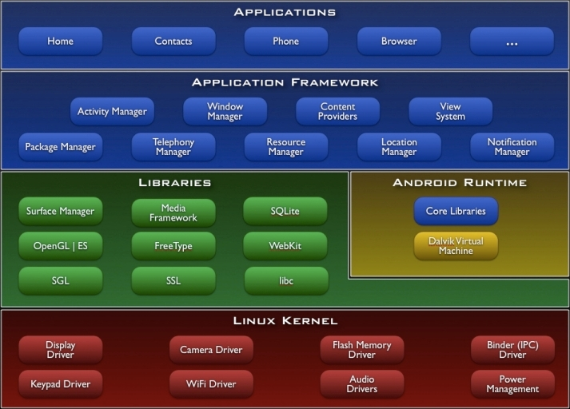
但是就像前面說的，這種作法
- 不是沒有，但是GOOGLE挾其實力已經這樣做了
- 未來如何發展就是見人見智，也許GOOGLE開設這個先例後，它就成為定例了。
爭議性
3~
- 如果前面講的獨立性抗辯還是辦不到，那只好採用
- 比較迂迴的規避方法
第三種
嗯嗯嗯
- 利用相連結程式各自切割獨立分開散布的方式，
- 把提供GPL程式原始碼的義務轉嫁給個別的End-user
分開散布
/ 轉嫁責任
结构破散
- 是將整個GPL軟體專案分為基本元件及附加元件兩大部份
- 然後採用兩部份個別散布的方式，一定程度內可以規避掉GPL授權程式碼的感染性
基本元件
+ 附加元件
END USER
- 運作成功的話、可以將GPL提供程式原始碼的義務性規定的責任轉嫁給END USER，程式的終端使用者。
責任轉嫁
.
以此張圖進行說明，程式的主要元件:OPEN、具備基礎獨立運作功能、GPL；程式的附加元件:UNOPEN、讓使用者自行下載安裝，與主元件在使用者的電腦上結合。
因為原始散布者並未將主附元件結合釋出，是以GPL感染性在散布之分不及於附加元件
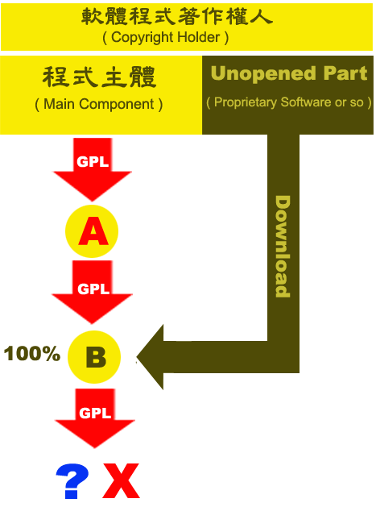
主要元件
- 因為這個主要元件是用GPL釋出當然要OPEN
- 它通常是程式的主軸架構或是根本就是一個作業平台、像LINUX KERNEL
MAIN→ GPL
附加元件
- 而附加元件方面它是由散布者自行撰寫，通常是UNOPEN的應用程式
- 在編寫上並未直接抄襲主元件以GPL釋出的程式碼，最多是用到一點HEADER FILE或是USER INTERFACE方面的資訊內容
Add-on→ UN OPEN
附加元件
Add-on→ XYZ LICENSE
- 附加元件可能用的是自行訂立的商業授權條款，極大多數不相容於GPL
一起的话...
- 如果散布者將程式主元件和附加元件直接兜在一起散布，就開啟了GPL授權條款的感染性
- 換句話來說、整個程式都要用GPL授權條款來進行散布
MAIN + Add-on
→ GPL
→ OPEN
結合動作
- 如果將主元件與附加元件結合的動作
- 是由End-user在充份的選擇自由下所做的決定
結合
by End-user
原始碼義務
- 那提供全部元件程式原始碼義務，就轉嫁到了End-user手上
責任轉嫁
.
再看一次這張圖，程式是在End-user的手上才被結合
在這個結合的時間點之後，附加元件確實也是會被GPL授權條款所拘束，但是之前也說過
"提供"
- 提供GPL程式原始碼這句話，不等於公開GPL程式原始碼
- 所以此時End-user單純的持有GPL授權的程式，只要不要散布，那也就沒有提供程式原始碼給別人的義務
提供 ≠ 公開
結果
- 最後的結果就是，只要結合作品的散布過程停止在End-user手上
- 這樣也就沒有任何一方違反了GPL授權條款提供程式原始碼的義務性規定
不再散布
認為..
- 部份人認為分開散布的理由還是要迫不得己才行，像是因為專利問題而不能提供程式原始碼
- 或是礙於國家法令沒辦法提供所有的程式碼讓人修改，但到底什麼樣的理由才能說是迫不得己，則還是見人見智
迫不得己
4~
- GPL授權感染性規避方法的
- 是GPL第3版開始才產生討論的作法
第四種
嗯嗯嗯
- 並且連產品製造者也沒有「能力」去修改這個記憶體的內容
- 那麼這時候這個唯讀記憶體就有可能被解釋為是不具修改性的硬體，是硬體的話自然不受「自由軟體」授權條款諸般義務性規定的拘束
ROM
→ 硬體
條款原文
- 重點是「Ability」這個字
- 連產品製造者本身都沒有辦法修改這個唯讀記憶體的內容，
- 就可以不用提供後手程式碼相關的安裝資訊
But this requirement does not apply if neither you nor any third party retains the ability to install modified object code on the User Product (for example, the work has been installed in ROM ).
不用給..
- 注意、原文是說這個產品不用給人GPL程式碼相關的安裝資訊
INSTALL INFORMATION
至於SOURCE CODE要不要給?
SOURCE CODE?
GPL3的定义...
The “ Corresponding Source ” for a work in object codeform means all the source code needed to generate , install , and (for an executable work) run the object codeand to modify the work, including scripts to control those activities.
原始碼定義
- 簡單來說、GPL3的原始碼定義包括狹義的source code、安裝資訊、以及編譯程式的腳本
- 也就是說，GPL3這條把code寫死在rom裡的作法，只說了可以不用提供install information，不包括狹義讓人有研究自由的source code也不用給
SOURCE CODEINSTALL INFORMATIONCOMPILING SCRIPT
但是也有人這樣質疑
- 軟硬體之間的份際到底在哪?
- 一般來說軟體就是可以被修改的code，
- 硬體則可能是這些邏輯概念實體化、無法修改的實物
軟體
vs.硬體
軟搞硬
- 所以如果產品裡的軟體連你自己及任何第三人都完全沒有能力修改的話
- 那解釋上有人認為它其實某種程度已經與硬體沒有兩樣
將軟體搞硬
它就是硬體
總是...
OUT-OF-DATE
SOURCE CODE
正式起訴之前..
- 所以這一類的公司往往在被正式起訴之前，
- 就會主動將程式原始碼釋出，如果拖延的分寸拿捏的好
分寸得當
拖延戰術
- 因為任何商品都有它的熱銷週期，
- 有時GPL程式的散布者並非完全不願意提供商品的程式原始碼，
- 只是要拖到商品週期過了才會完整提供，用拖延戰術來維護公司本身的商業利益。
商品週期
消痕...
- 所謂的障眼法，就是盡量讓別人看不出來軟體專案有用到GPL程式碼的痕跡
湮滅證據
嗯嗯嗯
- 夜路走多有時候會碰到鬼
- 原作者 洋蔥酷樂部 著作權宣示：歡迎使用於個人用途或論壇,但請勿自行加工修改或用於商業用途
被逮
杯具!
- 美 2003年3月 SCO vs. IBM(截定暫停)
- 美 2003年8月 Red Hat vs. SCO
- 美 2003年9月 IBM vs. SCO(反訴)
- 美 2004年1月 SCO vs. Novell(裁定Novell擁有著作權)
- 美 2004年3月 SCO vs. AutoZone
- 美 2004年3月 SCO vs. DaimlerCrysler
- 德 2004年5月 Welte vs. Sitecom(假處份裁定)
- 德 2005年4月 Welte vs. Fortinet(假處份裁定)
- 美 2005年7月 Novell vs. SCO(反訴）
還有這些
- 德 2006年9月 Welte vs. D-Link(一審定讞)
- 德 2007年7月 Welte vs. Skype(一審定讞)
- 美 2007年8月 Jacobsen vs. Katzer(裁定Artistic非授權)
- 美 2007年10月 BusyBox vs. Monsoon(和解)
- 美 2007年11月 BusyBox vs. Xterasys(和解)
- 美 2007年11月 BusyBox vs. High-Gain Antennas(和解)
- 法 2007年11月 Welte vs Iliad
- 美 2007年12月 BusyBox vs Verizon(和解)
- 美 2008年1月 Trend vs Barracuda(軟體專利)
接下來
- 要專篇介紹的是、GNU計畫下的另一要角
- LGPL授權條款
LGPL 篇
是
- 任何程式要以LGPL授權條款來授權，其本身必須要是函式庫才行
函式庫
所以
- 第一、調弱GPL授權條款的感染性，否則GNU計畫的函式庫可能無人敢用
- 原作者 洋蔥酷樂部 著作權宣示：歡迎使用於個人用途或論壇,但請勿自行加工修改或用於商業用途
1、 調弱 感染性
以及
- 第二、擴大GNU計畫函式庫程式的市佔率，因為程式愈多人用，才能達到實質推廣自由軟體的目標
- 著作權人：Aurélio A. Heckert，本圖依Free Art license 1.1進行公眾授權
2、 擴大
市佔率
Lesser指的是較弱/較低/較寬鬆
- 所以這個條款才會叫作LGPL，因為它是Lesser化的GPL
Lesser
LGPL的Lesser指的是
Lesser Bound
但同時這個字也代表了
- LGPL算是在自由理念方面有較少堅持，這代表後手透過LGPL得到的軟體自由也是較為薄弱的
Lesser Freedom
例外比較多
- 但是整個來說LGPL授權條款能聲明例外的地方比較多，所以感染性機制確實是弱很多
比較弱
感染!
- 修改原本是LGPL授權的函式庫，修改完的成果一樣得用LGPL來授權
LGPL Library
→ LGPL Library
或者是修改完後改用GPL來授權
LGPL Library
→ GPL Library
由LGPL授權改為GPL授權
LGPL → GPL
而且!
- 此過程不可逆轉、不可反悔，不可反由GPL授權轉為LGPL授權
不可逆
「修改感染」
- 所以拿LGPL授權條款和GPL授權條款在「修改感染」方面的比較
LGPL vs GPL
而在取用感染方面
- 如果取用LGPL授權函式庫一部份的程式碼，
- 加到自己的函式庫或程式，
- 這樣一來最後的成果也只能用LGPL或是GPL授權條款來散布
2、 取用
函式庫
- 取用LGPL函式庫的程式碼到自己的函式庫裡，則整個函式庫嗣後只能用LGPL進行授權
LGPL Library Code + Library
→ LGPL Library
直接GPL
- 上述這種情況，取用後的函式庫也可以直接用GPL來授權
LGPL Library Code + Library
→ GPL Library
非库...
- 如果取用LGPL函式庫的程式碼的是某個不具函式庫性質的程式，
- 則嗣後整個程式只能用GPL進行授權
- 因為LGPL的授權方式只能適用在對象是函式庫的時候
LGPL Library Code + Program
→ GPL Program
嗯嗯嗯
- 但是如果拿LGPL授權條款和GPL授權條款在「取用感染」方面的比較
LGPL vs GPL
LGPL從2.0版本時期，就有一個
- 不受感染的概念，就是CODE的取用量很少的話則不受LGPL授權條款的拘束
微量取用
微量取用
- 這規定在LGPL2.0的第五條第四款，取用
- 數字參數、資料結構層級、小巨集、十行之內小型的內嵌功能程式碼，
- 不會引發感染機制。
Numerical Parameters、Data Structure layouts and accessors、Small macros、Ten lines or less in length small inline functions.
微量?
- 也就是說、程式碼的取用狀況如果微量，取用者可以例外地自行舉證主張不被感染
- 這一點在GPL2.0的時期是沒有的，但是其實GPL3已經承認合理使用，留待後話。
自行舉證
結合感染
- 最後是結合感染，把自己寫的軟體和LGPL授權函式庫結合在一起運作。
3、 結合
與GPL
- 結合感染方面，是LGPL授權條款與GPL之間最大的不同
- 波蘿麵包，免費試吃中
- 原作者波採用Creative Commons「姓名標示-非商業性-禁止改作台灣2.5版」授權條款
LGPL 規則
- 所以在LGPL的遊戲規則之下，其他程式與LGPL函式庫連結或是結合運作，並不必然啟發感染性機制。
- 程式與函式庫結合的運作關係，原則上是不會引發感染，這個預設和GPL大為不同。
結合 ≠ 感染
修改
- 修改原本是LGPL授權的函式庫，修改完的成果還是得用LGPL來授權
A( LGPLed )
→A°( LGPLed )
或是改用GPL來授權
A( LGPLed )
→A°( GPLed )
函式庫
- 取用LGPL授權函式庫一部份的程式碼，加到自己的軟體裡，成果也會受到LGPL授權條款的拘束
A+B-portion( LGPLed )
→A°( LGPLed )
可被GPL
A+B-portion( LGPLed )
→A°( GPLed )
函式庫結合
- 把自己寫的軟體和LGPL授權函式庫結合在一起運作，例外的
A+B( LGPLed )
→A+B( LGPLed )
LGPLv2
- 但是依照LGPL第2版，函式庫結合關係有二點例外規定仍要注意
例外規定
结合方式
- 第一個例外規定，若是LGPL函式庫與其他程式屬於方式的結合
(1)可執行檔
視為一體
- 指的是將其他程式與LGPL函式庫整合為一個無法分割的執行檔(Executable File)
- 則整個程式視為一體，全部都會被LGPL授權條款所拘束
(1)Executable File
可拆解
- 將LGPL函式庫與其他程式包在一起散布，用的是
- 類型的堆疊方式，程式與LGPL函式庫雖併同散布，
- 但兩者仍有一定的可拆解分辨性，並不如同整個執行檔般緊密結合
(2)Package
e.g
- 比如燒在同一片光碟片上，安裝主程式時可以選擇把LGPL函式庫同時安裝到電腦裡供主程式讀取數據
- 這時候LGPL函式庫的授權方式並不會干擾光碟片裡的主程式或其它程式
配套式
安裝
最低要求
- 但是LGPL2.0有一個最低要求，它要求這些與LGPL函式庫合併散布，
- 後來又可以透過安裝和協同運作的其他程式，
- 必須要容許使用者進行還原工程等研究利用的行為
- 這算是把LGPL2函式庫拿來做結合利用時，使用者所要付出的最低代價
容許還原
原則上、LGPL3的函式庫程式
L GPL3
→ L GPL3
GPL3
- 例外時、LGPL3的函式庫程式被修改後，會轉換以GPL3授權條款來散布。
- 前面說過了，LGPL和GPL向來有授權轉換的關係，LGPL可以單行道式的轉換成GPL
L GPL3
→GPL3
原因
- 轉換的原因有二種，一是修改者
- 自願把修改過的LGPL3函式庫改以GPL3來授權
(1)心甘情願
新規定...
- 另一個轉換的原因，是因為修改者被LGPL3新版的規定所限制
(2)為勢所逼
嗯嗯嗯?
- 會不會被強迫轉換的關鍵在於，修改者修者LGPL3函式庫時，
- 有沒有留一手設下獨有的函式庫功能呼叫方式
獨門暗器
專屬!
- 這種情形就是，如果有人修改了LGPL3的函式庫，
- 並且在上面設置了專屬的功能只能讓特定的應用程式來呼叫
( - )AP + ( - )LGPL3 Library-modified
因為
- 因為就軟體自由的觀點來看這個函式庫，它雖然可以被修改，但是改了以後
- 上面設置的特別功能還是只能讓特定的AP來呼叫，
- 等於是在自由的函式庫上設置了不自由的區域，這樣一來便違背了軟體自由的精神
能改、受限
LGPL v3
- 所以LGPL3授權條款要求這種情況，
- 函式庫在被修改後就一定要轉為GPL3授權，
- 因為GPL3感染性較強能「一體感染」
- 最後連相結合的AP也會被迫開放本身的程式原始碼
( - )AP + ( - )LGPL3 Library-modified
↓( - ) AP + ( - ) GPL3 Library-modified
FAIR USE
- 所不同的是，LGPL3版不再談2版時微量取用的概念
- 因為3版裡已經明示肯定「合理使用(FAIR USE)」的法理概念，
- 就不用再贅談微量取用的相關標準
合理使用
头文件
- 值得一提的是，LGPL3特別把HEADER FILES的合理使用情形特別標明
HEADER FILES
嗯嗯嗯
- 取用HEADER FILES的必要CODE加到AP(執行程式)裡並不會造成感染
HEADER OKAY
結合狀態
- LGPL3版與2版在結合方面的規定有一些不一樣的地方
- 3版把結合的狀態分成兩種
有所不同
結合關係
- 程式與函式庫的結合關係(Combined Work)
- 指的是將LGPL3函式庫與其他應用程式結合後進行利用
3、程式
+ LGPL3函式庫
結合原則
- 這類的結合關係、LGPL3同於LGPL2都是以為原則
不感染
「應用程式對應碼」
- 第一種、結合者須提供「應用程式對應碼(Corresponding Application Code)」，給結合作品的後續使用者
- 所謂的「應用程式對應碼」，指的是能夠讓AP與函式庫之間連結運作的必要資訊，
- 可以說是AP裡的一小部份、與其他程式接軌的SOURCE CODE
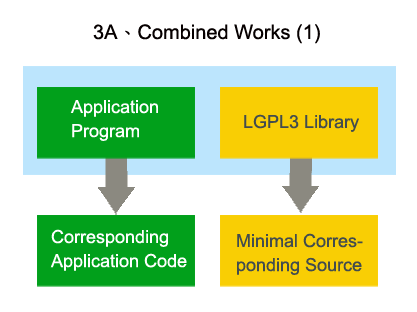
有義務
- 但是如此結合者不願意提供「應用程式對應碼」給結合作品的後續使用者
- 則他就有義務建構一套「適宜的函式庫共享機制
- (Suitable Shared Library Mechanism for Linking with the Library)」出來
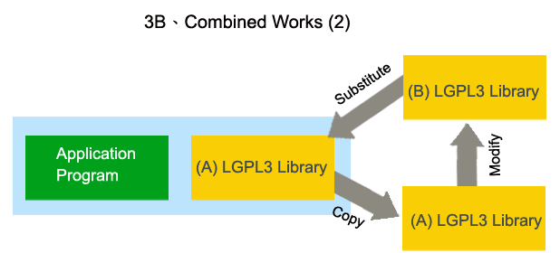
一般狀況
- 一般狀況下，應用程式加上LGPL3的函式庫，是最普遍的結合方式
AP + LGPL3 Library
必要資訊被隱藏
- 如果應用程式與LGPL3函式庫之間連結運作的必要資訊被隱藏拒絕披露的話
- 一旦舊有的LGPL3函式庫被修改過，
- 則除了AP作者的其他人，都不知道怎麼樣能讓原來的AP和升級過後的LGPL3函式庫再重啟連結
AP
× LGPL3 Library- modified
這樣...
- 簡單來說、這樣的LGPL3函式庫雖然能夠讓人修改
- 但是改過後並無實益，因為與原來的AP都不能重新結合運作，
- 如此一來可以說LGPL3函式庫的修改自由度，實質受限於UNOPEN的AP
能改、受限
CAC
- 所以LGPL3比2版時期多要了AP的CAC，
- 就是AP與LGPL3函式庫之間建立連結關係的相關資料
- 如此一來、他人方可藉此將修改後的LGPL3函式庫與原有的應用程式重啟結合關係
C orresponding
A pplication
C ode
還有這樣
- 「適宜的函式庫共享機制(Suitable Shared Library Mechanism for Linking with the Library)」
函式庫之間
- 最後一個LGPL3的結合範例、Combined Libraries，函式庫與函式庫之間的結合關係
4、函式庫
+ LGPL3函式庫
大聲說
- 它要求使用者用了LGPL3的函式庫就要大聲說出來(明示使用)
- 而且還要多附一份乾淨版本給拿到函式庫結合作品的人(重製推銷)
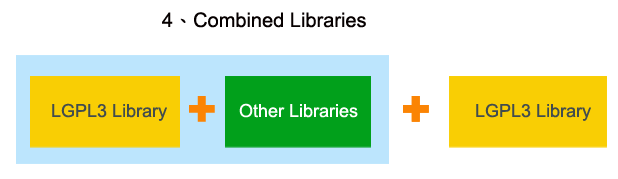
为目標
- 簡單來說、這是LGPL3為了擴大自己的市佔率，程式愈多人用才愈能達到GNU計畫推廣自由軟體的目標
- 著作權人：Aurélio A. Heckert，本圖依Free Art license 1.1進行公眾授權
擴大
市佔率
GPL各版本間
- 前面已經類型化的介紹過LGPL3版與2版的差異，下面接著討論的是GPL各版本間又有什麼樣的差異
- v.1→極少用；v.2→非常重要，Linux Kernel，1989；
- v.3→2007年末、軟體專利的反制條款，主要是2版和3版差異的討論
GPL v.1 v.2 v.3
嗯嗯嗯
- 拿GPL3版與2版規定相比，其實就軟體自由理念的堅持，它們的表現方式是大同小異，
- 可以說3版是寫來解決2版時期許多廣受爭議並懸而未解的問題
- GPL3版與2版相比，它有一些擴張GPL拘束效力的地方，但也有一些自行限縮的地方
大同小異
久懸未解
文字
- GPL3擴張的第一個面向、就是它用字遣詞朝著通俗化的方向改變
- GPL3採用更為通俗而口語化的方式來編寫，
- 這樣可以避免各國法院因名詞解釋的不同而產生不同見解的裁判
1、用字
通俗化
私法領域
- 因為私法領域有一個法律原則叫
- 只要不是法律明文禁止的行為，則不管多光怪陸離的契約都可以成立生效
契約自由主義
揚棄...
- 所以GPL3就可以透過口語化的私人契約，揚棄各國智慧財產權法律相關的
預設包袱
大白話
- 法院審理自由軟體爭訟案件時就不會誤用著作權法上的既定概念，
- 而轉而尊重GPL授權條款上寫的白話內容。
○ 白話內容
GPL3擴張的第二個面向、就是
2、 TiVo 化
的反制條款
!
- 是一種「數位電視節目定時預錄」的裝置，近幾年的銷售成績很好
TiVo
內部的GPL程式碼
- 但是TiVo產品有一個很吊詭的特色，
- 其內嵌於機器內部的GPL程式碼原則上並不禁止使用者修改
能改
三大自由丧失
- 所以用GPL重視的四大自由來檢視TiVo產品
- 使用者只有研究的自由，剩下的三大自由都沒有辦法得到落實。
研究 修改 重製 散布
RMS
- 所以RMS認為這是一種對GPL義務性要求的惡意規避
- TiVo化的軟體表面上並不禁止使用者修改，但實質上使用者修改後一點實益也沒有。
\("▔□▔)/
RMS vs XEROX
- 回頭想想RMS與XEROX印表機的歷史故事
- 如果XEROX當初給了RMS印表機驅動程式的原始碼，
- 但一旦改了以後機器就死當，你認為RMS能夠接受嗎?
XEROX
所以GPL3(RMS)的結論是
- 這類對GPL軟體自由理念的惡意規避，是需要被明文禁止的
× TiVo
以往
- 以往的軟體授權問題只會出現在著作權法(COPYRIGHT LAW)的範疇下
- 因為純軟體性質的發明並不能申請專利
著作權
但是隨著美國核發
- SOFTWARE PATENT，許多GPL2版時期沒有辦法預測的專利爭議也隨之而起
軟體專利
自願..
- 這是指任何自願將專利技術寫進GPL3程式的專利權人，
- 則視同其在使用、研究、修改、再散布程式這
- 的範疇內，自動將專利使用權授與依GPL3遊戲規則使用軟體程式的人
四大自由
的限度
訴訟
- 任何自願將其專利技術寫進GPL3程式的專利權人，
- 他人若是完全依照GPL3的遊戲規則在四大自由的範圍內利用這個軟體，
- 則專利權人不得對此利用人提起專利侵權訴訟
訴訟施行
的抑制
相容性
- 而GPL3擴張的第四個面向、可說就是增加授權條款之間的相容性
4、相容/融
GPL3第7條設有Additional Terms
額外添附
條款
過往
- 過往的GPL2版，要求使用者不得增刪條款內文任何一個字
- 它要求GPL程式的授權人要嘛接受條款的全部，要嘛根本就不要用GPL來釋出他的軟體
不得增刪
但在GPL第3版，第7條的
Additional
Terms
可調配
- 讓授權者可以在這個預設範圍內
- 額外的添附條款，調配後的文字視同GPL3授權條款本文的一部份
自行調配
第一個子項
- 第一個子項、散布者能夠自行調升自己對程式的擔保責任
- Disclaiming warranty or limiting liability differently from the terms of sections 15 and 16 of this License; or
(1)自行調升
擔保責任條款
調升擔保責任
- GPL3讓散布者可以自行調升擔保責任，可以說這是正面鼓勵GPL程式的商業化利用
- 但當然、這些商業化利用的行為也是要符合GPL四大自由理念的前提下才能被認可
商業化
法律上的歸責邏輯
- 有償的買賣通常有一些擔保責任、無償的贈與通常不需要負擔保責任
有償 → 有責
無償 → 無責
e.g
- 所以免費的豬血湯裡通常不會有豬血
- 當某個東西是由權利人無償贈與他人時、自然不能對贈與人要求太多
- 原作者 洋蔥酷樂部 著作權宣示：歡迎使用於個人用途或論壇,但請勿自行加工修改或用於商業用途
豬血 湯裡沒 豬血
如果收取價金...
- 但是如果散布者是有收取價金或其他好處的
- 自然就要擔負比無償散布時更高的擔保責任
收取價金
= 責任升高
其實GPL...
- 其實GPL授權條款從來沒有禁止散布者收取價金，只是這個名目上不能叫做軟體授權金
- 其他能夠舉証的合理費用還是可以收取的
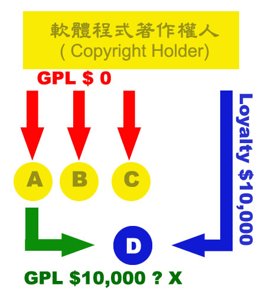
唯一原则
- 而且GPL服務費用的收取有其規則，重點就是不能阻礙
- 合法取得GPL程式目的碼的人，再接續取得程式原始碼
不能阻礙
像這個簡單的例子
○ OBJECT + SOURCE = 1000元
單獨散布
- 分開散布、在程式原始碼的單獨散布方面只收取「工本費用」→okay
○ OBJECT(900元) + SOURCE(100元)
GPL明示禁止
- 下面這個才是被GPL授權條款明示禁止的收費模式
- 以低廉的價錢讓人取得程式目的碼，
- 嗣後再用高價兜售程式原始碼，此為吊弭行為→不okay
× OBJECT(10元) + SOURCE( 990 元)
單獨散布GPL程式原始碼时
- 所以記得，GPL要求單獨散布GPL程式原始碼的行為
- 散布者只能夠收取網路傳輸或是燒錄光碟的工本費用，這是一個被明示的大原則
工本費用
GPL3第7條的第二個子項是
- ATTRIBUTION的保留條款；
- Requiring preservation of specified reasonable legal notices or author attributions in that material or in the Appropriate Legal Notices displayed by works containing it; or
(2)顯名聲明
「著作權聲明」不完全...
- 其實COPYRIGHT NOTICE和ATTRIBUTION不是同義字
- 「著作權聲明」不完全等於「顯名聲明」
COPYRIGHT NOTICE
≠ ATTRIBUTION
著作權聲明太过简短
- 「著作權聲明(COPYRIGHT NOTICE)」是很簡短的資料，
- 包括著作權人姓名、著作年份這些訊息
COPYRIGHT 2008 林誠夏
ATTRIBUTION可以
- 而「顯名聲明(ATTRIBUTION)」則多帶有作者自我宣傳的廣告成份
- 可以零零總總編寫很多資訊上去
COPYRIGHT 2008 林誠夏
台灣大學法學碩士中央研究院自由軟體鑄造場
專案經理畢業論文：自由軟體產業推動之反思
專長領域：自由軟體授權條款研究與產業策略運用分析
網路部落格：http://lucien.cc/…
…………………………………………………
GPLv2时...
- GPL在2版時期並不允許這種過於累贅的「顯名聲明」存在
- 這也是當初舊版BSD授權條款會和GPL2.0產生相容性衝突的原因
累贅
GPL3現在
- 但是、GPL3現在對於禁止ATTRIBUTION這件事不再堅持了
不再堅持
因为..
- 因為其實很多自由軟體的作者希望透過寫這種ATTRIBUTION來自我宣傳
- 漸漸地GPL授權條款也只能尊重這個需求，以換取授權條款與授權條款間的相容性
相容性
和ARTISTIC LICENSE2.0相容
- 改版後的GPL3在這款額外添附條款的運作下，變得可以和ARTISTIC LICENSE2.0相容
- 否則ARTISTIC LICENSE在GPL2版時期是不能夠與GPL授權條款相容的
○ ARTISTIC2.0
+ GPL3
另名條款
- GPL3第7條的第三個子項、程式版本另名條款，GPL3程式的著作權人可以要求修改者用不同的版本號或是名稱來為後面的衍生作品重新命名，以避免作品同一性的混淆
- Prohibiting misrepresentation of the origin of that material, or requiring that modified versions of such material be marked in reasonable ways as different from the original version; or
(3)程式版本
另名條款
禁止背景广告
- 第四個子項、廣告背書禁止條款，
- 禁止後手在未經允許的狀況下，
- 以原程式著作人的名聲為後續版本進行宣傳或為其衍生程式的品質背書
- Limiting the use for publicity purposes of names of licensors or authors of the material; or
(4)廣告背書
禁止條款
商標權
- 第五個子項、商標權明示保留條款，原權利人明示保留其商標方面的權利，禁止收受程式的後手在未經原權利人允許的前提下，運用這些商品服務標記。
- Declining to grant rights under trademark law for use of some trade names, trademarks, or service marks; or
(5)商標權
明示保留條款
商業手法
- 這樣得例子像是、RED HAT的LINUX DISTRIBUTION並不收取軟體著作權的授權費用，
- 但是它會收取商標方面的授權費用
- 任何產品如果標示RED HAT的則須付商標費用使用，
- 這也是在GPL授權條款約束下仍得運行的商業手法之一。

不得代越庖廚
- 第六個子項、前手責任添加禁止條款，
- 簡單來說原散布者沒有自已承諾的責任，後手不得代越庖廚為其添加
- 這是為了把不同時段散布者的責任釐清的更清楚
(6)前手責任
添加禁止條款
GPL3與2版
- 以上這些、都看得出來GPL3與2版時期嚴令全文不得增刪一字的
態度有別
原則明示!
- 接下來、GPL3擴張的第五個面向，就是明示使用原則的強化
5、明示
使用原則
標示事實
- 簡單來說、它要求只要所散布程式有利用/或連結GPL/LGPL程式的事實，就要標示出來
- 不論散布程式者判斷自己的利用方式是不是要被GPL程式所感染
不受感染
仍須具名
GPL2版时的对策
- 因為GPL2版有很強的感染性，造成以前很多人的應用策略就是
- 第(1)先偷偷摸摸不要說自己有利用到GPL相關程式；
- (2)等被發現了再試試看辯解自己不受GPL感染性的拘束
(1)不要說明
(2)努力辯解
GPL3版:要了就要講
- 所以GPL3版直接要求使用者要了就要講
- 讓試圖遮掩者連遮都不要遮了，若是連結了GPL程式而不講，
- 就一下子被推定是違反GPL授權條款了
說清楚
講明白
提高程式知名度
- 因為提高知名度的廣告行為，也算是推廣自由軟體的一種方式
- 所以GPL3版之後，任何高度低度的GPL程式利用情形都得明講，
- 使用者若是隱蔽自己的利用行為，隱匿本身就對契約條款形成違反；
- 以上、是GPL第3版較為擴張的部份。
提高 GPL
程式知名度
GPL2版時期的規定是
- 違反GPL2授權條款的義務性規定會造成散布者永久失去利用這些程式碼的權利
違反 = 失權
视为侵權
- 也就是說、如果依此GPL2程式碼製作出產品，產品就有可能被視為侵權行為結果的
- 除非原權利人主動再次授權，不然原則上就只能下架停止販賣
侵權物
(⊙_⊙;)
GPL3...人性化
- GPL3版就此問題規劃了比較人性化的設計，它容許違犯GPL3條款者有洗心革面的
補正期間
~(￣▽￣)~
瞬間!
在自動補正方面，違犯者只要在發現並自行修正違反GPL3內容的不足處後即瞬間恢復使用這些程式碼的權利
自行修正
= 瞬間復權
除非
- 除非原著作權人於其自行修正後的內，明示通知其惡性重大不得復權
60天
被動補正...
- 而在被動補正方面，指的是原著作權人通知違犯者有條款內容實踐不足的問題，如果違犯者能在
- 之內完成補正，則視其失權狀態終止，亦得以回復原來的授權狀態
30天
GPL3第二個限縮
- 接著、GPL3第二個限縮的面向是它
- 類別的遠距利用模式
2、明示容許
ASP
ASP
A PPLICATION
S ERVICE
P ROVIDER
GOOGLE...
- 比如說GOOGLE的搜尋引擎、雖然它是利用自由軟體來進行服務、但因為不涉及程式碼的實際傳遞(CONVEY)
- GPL3明白的宣示這類的應用行為並不在感染性拘束範圍之內，遠距服務的提供者並不須負提供程式原始碼的義務

AGPL3
- 在AGPL3的規定下遠距服務方式ASP是在感染性的範圍之內的!除了這點不同以外它的其他內容和GPL3完全相同。
GNU
AFFERO
GENERAL PUBLIC LICENSE 3.0
AGPL3
- 使用者一定要認知到這個事實，真的同意了再使用AGPL3的軟體
- 援引台湾著作權法第52條及65條主張為學術推廣而合理使用
- 那這個AGPL3的授權承繼性就真的非常的強
- 此圖片取用於網際網路
GPL3第三個限縮
- 接著、GPL3第三個限縮的面向，可說是其的法律正當性
3、肯認
合理使用
定性為...
- 合理使用傳統上被定性為一種合理性的抗辯權(有不同意見)
- (台湾著作權法§44-63、65條及美國著作權法§107條)
抗辯權
GPL2时...
- 而GPL授權條款在2版時期最為商用人士抱怨的一點就是
為人垢病
太霸道...
- 若遵照授權條款嚴格的文義解釋，任何程式只要取用少量的GPL程式碼就被感染
欺人太甚
GPL3就此點算是
- 它聲明任何人依其行為地國家法律得以主張合理使用，則合理且少量的程式碼取用行為就不受GPL3授權攫取性的拘束
有所退讓
從此之後、GPL授權條款不再是
- 回到惡靈古堡的比喻，人類不再只是被僵屍輕咬一口就被感染，從GPL3以後、這僵屍必須要咬得夠大口才會開啟感染性的擴散機制。
× 沾到就染
SYSTEM LIBRARY
- 簡單來說、SYSTEM LIBRARY可以說就是前例所說的
WELL DEFINED INTERFACE
GOOGLE的ANDROID手機共同開發平台
- 就企圖營建這樣的WELL DEFINED INTERFACE
只要這樣的中介是
- 的、UNOPENED CODE「有機會」透過中介介面而不受到GPL3授權條款的拘束
合情合理
实在是...
- 其中最重要原因可以說就是凡事
- 若是GPL授權程式的感染性太強，造成商業營運者避之惟恐不及，
- 恐怕也不是推廣自由軟體的原意，畢竟軟體若是沒人敢用，怎麼能算是成功?
過猶不及
商業现实
- 但這幾年確實已經有向商業勢力靠攏的趨勢，近年來大力推動自由軟體應用的，都是商業公司
商業接棒
衝突與磨合
- 最後的課程會談到自由軟體近年在理念與現實面產生哪些衝突與磨合
- 又有哪些成功的應用範例及彈性新穎的商業應用模式
折衷趨勢
如何選擇授權條款?
- 那麼自由軟體授權條款其實選擇上非常繁複，光看就讓人眼光瞭亂，
- 這些是OSI(OPEN SOURCE INITIATIVE，開放源碼促進會)羅列的自由軟體授權條款列表
- 程式開發者到底應該如何選擇呢?
- Academic Free License - Adaptive Public License - Apache Software License - Apache License, 2.0 - Apple Public Source License - Artistic license - Attribution Assurance Licenses - New BSD license - Computer Associates Trusted Open Source License 1.1 - Common Development and Distribution License - Common Public License 1.0 - CUA Office Public License Version 1.0 - EU DataGrid Software License - Eclipse Public License - Educational Community License - Eiffel Forum License - Eiffel Forum License V2.0 - Entessa Public License - Fair License - Frameworx License - GNU General Public License (GPL) - GNU Library or "Lesser" General Public License (LGPL) - Historical Permission Notice and Disclaimer - IBM Public License - Intel Open Source License - Jabber Open Source License - Lucent Public License (Plan9) - Lucent Public License Version 1.02 - MIT license - MITRE Collaborative Virtual Workspace License (CVW License) - Motosoto License - Mozilla Public License 1.0 (MPL) - Mozilla Public License 1.1 (MPL) - NASA Open Source Agreement 1.3 - Naumen Public License - Nethack General Public License - Nokia Open Source License - OCLC Research Public License 2.0 - Open Group Test Suite License - Open Software License - PHP License - Python license (CNRI Python License) - Python Software Foundation License - Qt Public License (QPL) - RealNetworks Public Source License V1.0 - Reciprocal Public License - Ricoh Source Code Public License - Sleepycat License - Sun Industry Standards Source License (SISSL) - Sun Public License - Sybase Open Watcom Public License 1.0 - University of Illinois/NCSA Open Source License - Vovida Software License v. 1.0 - W3C License - wxWindows Library License - X.Net License - Zope Public License - zlib/libpng license
- 第六章-如何選擇合用的自由軟體授權條款/兼論授權融合性問題
<brief/>
- 5' 有关
- 10' 知识产权
- 10' 自由文化
- 10' 许可分类
- 10' 自由软件
- 10' 深入GNU
- 10' 协议选择
- 10' 现实冲突
- 10' 商用模式
詳如此表
常见协议
| 许可证 |
译者 |
|---|
| Academic Free License Version 3.0 (AFL) |
邱冠勛 Kuan-Hsun Chiu．葛冬梅 Florence T.M. Ko |
| Apache License 1.1（Apache 1.1） |
賴嘉倫 Ciia Lun Lai |
| Apache License 2.0（Apache 2.0） |
賴嘉倫 Ciia Lun Lai |
| BSD License（BSD) |
賴嘉倫 Ciia Lun Lai |
| Common Development and Distribution License(CDDL) |
葛冬梅 Florence T.M. Ko |
| Common Public License Version 1.0 (CPL) |
賴嘉倫 Ciia Lun Lai |
| GNU General Public License 2.0（GPL 2.0） |
葛冬梅 Florence T.M. Ko |
| GNU General Public License 3.0（GPL 3.0） |
林誠夏 Lucien C.H. Lin．葛冬梅 Florence T.M. Ko |
| GNU Lesser General Public License 2.1（LGPL 2.1） |
林誠夏 Lucien C.H. Lin. |
| GNU Lesser General Public License 3.0（LGPL 3.0） |
林誠夏 Lucien C.H. Lin. |
| IT License(MIT) |
賴嘉倫 Ciia Lun Lai |
| Mozilla Public License 1.0(MPL) |
葛冬梅 Florence T.M. Ko |
| Mozilla Public License 1.1(MPL) |
葛冬梅 Florence T.M. Ko |
| Open Software License 3.0（OSL） |
邱冠勛 Kuan-Hsun Chiu |
| Q Public License 1.0（QPL） |
林誠夏 Lucien C.H. Lin. |
| lib/libpng License (zlib/libpng) |
賴嘉倫 Ciia Lun Lai |
License Wizard2.2與3.2版
- 製作成呈現方式不同的License Wizard2.2與3.2版
- 只要您參與的專案是「原生計畫」，尚未取用具COPYLEFT性質的自由軟體程式碼，即可使用這個授權精靈
使用方式
- 簡單回答幾個問題後，就可以找出符合您期待需求的自由軟體授權條款
回答問題
→找出條款
這是LICENSE WIZARD v2.2版的畫面
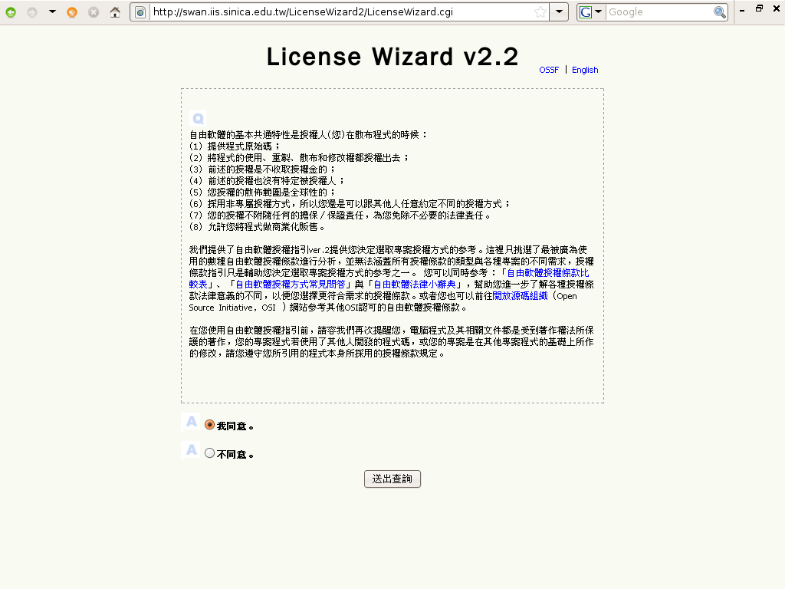
這是LICENSE WIZARD v3.2版的畫面
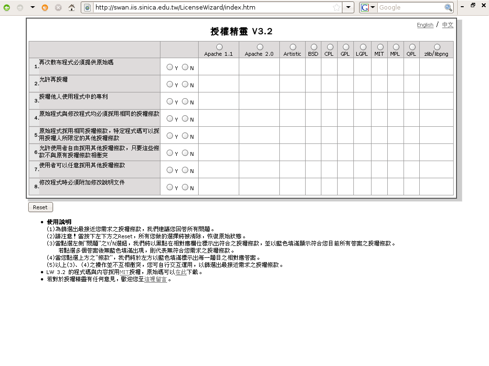
嗯嗯嗯
- 1.再次散布程式必須提供原始碼
- 2.允許再授權
- 3.授權他人使用程式中的專利
- 4.原始程式與修改程式均必須採用相同的授權條款
- 5.原始程式採用相同授權條款，特定程式碼可以採用授權人所限定的其他授權條款
- 6.允許使用者自由採用其他授權條款，只要這些條款不與原有授權條款相衝突
- 7.修改程式時必須附加修改說明文件
问题1
- 是否要求收受你程式的後手，在再散布軟體時需一併提供程式原始碼
1.後手再次散布程式是否需要提供 原始碼 ?
问题2
- 所謂的再授權(Sublicense)就是將得到的授權以自己名義再行授權出去
- 如果你同意後手得以再授權你的程式，這個後手就能夠以自己的名義，把這些權利再行授權出去?
2.是否允許後手將程式 再授權 ?
点解?
- 至於為什麼會有內容許自己的軟體能被他人用自己的名字再授權?
- 簡單來說就是的意思，有時候著作權利人認為修改者改了東西以後就自行再授權自行負責，
- 不要把這個授權關係總是導回散布程式的源頭
撇清關係
各自負責
问题3
- 是否一併將程式中利用到的個人專利，連同著作權一併授權出去
3.是否授權他人使用程式中的 專利 ?
问题4
- 這就是之前提過的「嚴格COPYLEFT」的策略，病毒式感染
- 要求後手修改程式後亦不得變動衍生作品的授權模式，再散布時仍然要完全遵守你所預先設立的遊戲規則
4.是否要求後手自行修改的程式，須與原始程式採用 完全相同 的授權條款?
问题5
- 這是MPL及CDDL類的「檔案式COPYLEFT」策略，
- 也就是說原始程式的部份，經過多久的修改散布都要照原著作權人預設的遊戲規則
- 但程式散布過程中，其他人添附的部份，則允許其另行選用別種授權方式
5.原始程式採用相同授權條款， 特定程式碼 可否採用授權人所限定的其他授權條款?
问题6
- 是否允許他人在不與原授權規則衝突的情況下，自行增設新的授權規則，然後用新的規則將程式再行散布出去
- 1-3款，加5、6、7、8、9款
6.是否允許使用者自由採用其他授權條款，只要這些條款 不與原有授權條款相衝突
问题7
- 後手修改你的程式後，另行散布時是否須附加修改的相關說明文件?
- 只要簡單回答這幾個問題後，授權精靈就可以幫你挑出符合期待的自由軟體授權條款
7.修改程式時是否需要附加 修改說明文件 ?
程式碼融合問題
- 但是不可諱言的是，目前LICENSE WIZARD的實用性還是不高，因為本地的原生專案實在不多
- 大部份的自由軟體專案之所以為人喜愛，就是程式碼與程式碼之間可以自由地抄來抄去，這些程式碼的抄寫問題牽涉了很多授權相融性的問題
授權相融性
授權相融性
- 授權相融性，才是現在管理自由軟體專案開發者的
- 它涉及很多新的科技領域及一直在挑戰現行著作權法、專利權法規範的極限
大哉問
只能先...
- 所以、接下來的內容說的只是一個大概
- 讓大家知道自由軟體授權相融方面主要的問題和態樣是哪些
梗概
授權條款不能相
- A程式和B程式的授權條款不能相容，導致程式碼與程式碼之間也不能互相抄寫
× A+B→？
e.g
- 像是GPL與QPL授權的程式碼就是不能互相抄寫的
- 這二個授權條款在義務性規定方面有所衝突互斥，所以它們也不能相容於同一個軟體專案
GPL
vs. QPL
試圖解決...
- 所以像MOZILLA基金會的MPL及SUN寫出來的CDDL就試圖解決這樣的問題
MPL、CDDL
但是很難，能達到的成果還是
- 在大的MPL或是CDDL專案裡加入了GPL的file，這個感染性還是可能會擴充到整個專案
有所侷限
二、
- 所以接著介紹自由軟體授權條款相容的第二種類型的類型
蛇吞象
嗯嗯嗯
- A授權程式和B授權程式的程式碼一旦結合(Link Merge Combine)在同一個專案
- 那以後所有的程式碼都要用A授權條款來授權釋出
○ A+B→A
像是GPL和LGPL的關係
GPL + LGPL
→ GPL
GPL和BSD的關係
GPL + BSD
→ GPL
例如...
- 例如APACHE2.0條款結合BSD授權條款，你可以自己寫一個對於原來二個授權條款的義務性規定都不違反的MGBBD條款
- 隨便你要叫這個條款什麼名字，只要它的條款內容不要和APACHE2.0及BSD原來的內容有所衝突就好了
APACHE2.0+BSD
→MGBBD
但是...
- 但是以這種MGBBD授權條款授權的程式通常
- 不會有人想要用，也不大會有人想要參與共工
沒人要用
没空!
- 簡單來說就是別人也都懶得理你，現在自由軟體授權條款已經多到不像樣的地步
- 如果你新寫的軟體不是有驚世駭俗的可用性，其實沒有幾個人會費心看你新創的授權條款內容是什麼
- Academic Free License - Adaptive Public License - Apache Software License - Apache License, 2.0 - Apple Public Source License - Artistic license - Attribution Assurance Licenses - New BSD license - Computer Associates Trusted Open Source License 1.1 - Common Development and Distribution License - Common Public License 1.0 - CUA Office Public License Version 1.0 - EU DataGrid Software License - Eclipse Public License - Educational Community License - Eiffel Forum License - Eiffel Forum License V2.0 - Entessa Public License - Fair License - Frameworx License - GNU General Public License (GPL) - GNU Library or "Lesser" General Public License (LGPL) - Historical Permission Notice and Disclaimer - IBM Public License - Intel Open Source License - Jabber Open Source License - Lucent Public License (Plan9) - Lucent Public License Version 1.02 - MIT license - MITRE Collaborative Virtual Workspace License (CVW License) - Motosoto License - Mozilla Public License 1.0 (MPL) - Mozilla Public License 1.1 (MPL) - NASA Open Source Agreement 1.3 - Naumen Public License - Nethack General Public License - Nokia Open Source License - OCLC Research Public License 2.0 - Open Group Test Suite License - Open Software License - PHP License - Python license (CNRI Python License) - Python Software Foundation License - Qt Public License (QPL) - RealNetworks Public Source License V1.0 - Reciprocal Public License - Ricoh Source Code Public License - Sleepycat License - Sun Industry Standards Source License (SISSL) - Sun Public License - Sybase Open Watcom Public License 1.0 - University of Illinois/NCSA Open Source License - Vovida Software License v. 1.0 - W3C License - wxWindows Library License - X.Net License - Zope Public License - zlib/libpng license
<brief/>
- 5' 有关
- 10' 知识产权
- 10' 自由文化
- 10' 许可分类
- 10' 自由软件
- 10' 深入GNU
- 10' 协议选择
- 10' 现实冲突
- 10' 商用模式
惡意規避...
- 前面講到對於自由軟體授權條款的惡意規避，有時候夜路走多了會碰到鬼
- 原作者 洋蔥酷樂部 著作權宣示：歡迎使用於個人用途或論壇,但請勿自行加工修改或用於商業用途
被逮
原則上
- 真的被發現時，原則上著作權人可能會先進行
- 王卯卯的BLOG
- 原作者王卯卯著作權宣示：使用於個人用途或論壇,但請勿用於商業用途
道德勸說
授權條款協同性辦公室
Compliance Lab
「軟體自由法律中心」
- 不過現在這類的業務則多移交給EBEN MOGLEN領軍的
- Software Freedom Law Center
SFLC
第一階段..
- 通常被發現的第一階段會先寄來
- 王卯卯的BLOG
- 原作者王卯卯著作權宣示：使用於個人用途或論壇,但請勿用於商業用途
警告信
e.g
To whom it may concern,I am writing to you because we at FSF have someconcerns about the GNU GPL/LGPL compliance statusof the 「YOUR PRODUCT」.I hope that this is simplya misunderstanding, and that we can clear up the concerns quickly.It appears to us that the firmwarefor the 「YOUR PRODUCT」 uses GNU MP, which is aprogram copyrighted by the Free Software Foundation.Moreover, it does not appear that 「YOUR COMPANY」provides materials that are required by the software'slicense, the GNU General Public License.Could you please clarify this situation for us?
請解釋一下為什麼取用了LGPL軟體一部份的程式碼，卻 沒有依照LGPL授權條款的規定提供程式原始碼 ？
警告信
We do hope that this is indeed a misunderstanding and not,in fact, a violation of the GNU GPL (as it currently appears).However, in the interest of full disclosure,we would like to inform you, from the outset, how mattersmust proceed if we confirm that a violation has occurred.Under Section 4 of the GNU GPL (and Section 8 of LGPL),violators of these licenses lose their right to distributethe software in question. The copyright holder of thesoftware, of course, has the power to restore these rights.
希望這是一個誤會，否則違約者照LGPL授權條款的規定，會 失去本來依LGPL授權條款所得到的權利 。
警告信
We prefer to restore the rights of violators quicklyonce they come into compliance as deemed by our review andconfirmation procedure. If you are indeed in violation ofthe license, this is what we want to do. Our goal is to helpyou bring the 「YOUR PRODUCT」 into compliance with the termsof our licenses.We will, however, require your assistanceto confirm your compliance. In past situations, violatorshave almost always cooperated with us to bring their productinto compliance. We hope that the same will occur here.
自由軟體基金會很願意為你恢復合法的授權狀態，前提是你願意 配合修正產品的釋出狀態 。
警告信
We employ Licensing Compliance Engineers and Attorneyswho can assist your engineers and legal team in bringing the「YOUR PRODUCT」into compliance. Our team would prefer towork with you interactively to resolve the matter. Thisfriendly approach minimizes engineering and lawyer timerequired to resolve the matter on both sides. In this case,we only require that you reimburse us for the hourly costof our work in bringing the 「YOUR PRODUCT」 into compliance.(As always, there are no licensing fees associated withthe Free Software we distribute. You would only reimburseus for the costs of our time spent working with you.This ensures that we can continue our GPL enforcement inperpetuity). If you work with us in this way, bringing your productinto compliance will take no more than 10 hours (at $265/hour).
我們有專業的工程師與律師團隊願意協助你調整產品的釋出方式，如果你願意配合的話，這個協同作業的費用 每小時265美元 ，最多不會超過十個小時( 8~9萬台幣 )。
費用...
- 這個協同作業的費用，近年其實有漲價的趨勢
- 要看案子複雜的程度、公司的規模以及事後的配合態度
漲價
PS:
- 附帶一提、GPL3及LGPL3之後，已設有自動復權的相關規定
If you do not take advantage of our offer to work withyou to bring the 「YOUR PRODUCT」 into compliance, your continueddistribution of these products may very well be in violation ofGNU GPL. As such, we request that you immediately cease distribution.Remember, simply bringing the 「YOUR PRODUCT」into compliance onyour own will not restore your rights to distribute GNU MP andother Free Software Foundation works.
請注意，單純的自行修正錯誤並 不能自動恢復權利 ，只有自由軟體基金會有恢復你合法授權狀態的權利和地位，如果你不願意配合基金會的協同作業，便請你 停止散布相關產品 。
善了...
Only we, the copyright holders, can grant you such restoration.Further, making future distributions of the「YOUR PRODUCT」incompliance with the GPL will not necessarily compensate for thedamages that existing non-compliant distributions may have alreadycaused the Free Software community. Resolving this matter requiresnegotiation about how best to serve the community's needs and interests.We would prefer to carry out these negotiations in a friendly andcooperative way. We look forward to your prompt response.Best regards
只有自由軟體基金會能助你 善了 此事，請與我們連絡協商。
就會發生這些
- 美 2003年3月 SCO vs. IBM(截定暫停)
- 美 2003年8月 Red Hat vs. SCO
- 美 2003年9月 IBM vs. SCO(反訴)
- 美 2004年1月 SCO vs. Novell(裁定Novell擁有著作權)
- 美 2004年3月 SCO vs. AutoZone
- 美 2004年3月 SCO vs. DaimlerCrysler
- 德 2004年5月 Welte vs. Sitecom(假處份裁定)
- 德 2005年4月 Welte vs. Fortinet(假處份裁定)
- 美 2005年7月 Novell vs. SCO(反訴）
還有這些
- 德 2006年9月 Welte vs. D-Link(一審定讞)
- 德 2007年7月 Welte vs. Skype(一審定讞)
- 美 2007年8月 Jacobsen vs. Katzer(裁定Artistic非授權)
- 美 2007年10月 BusyBox vs. Monsoon(和解)
- 美 2007年11月 BusyBox vs. Xterasys(和解)
- 美 2007年11月 BusyBox vs. High-Gain Antennas(和解)
- 法 2007年11月 Welte vs Iliad
- 美 2007年12月 BusyBox vs Verizon(和解)
- 美 2008年1月 Trend vs Barracuda(軟體專利)
試舉一例
- 德 2006年9月 Welte vs. D-Link（一審定讞）
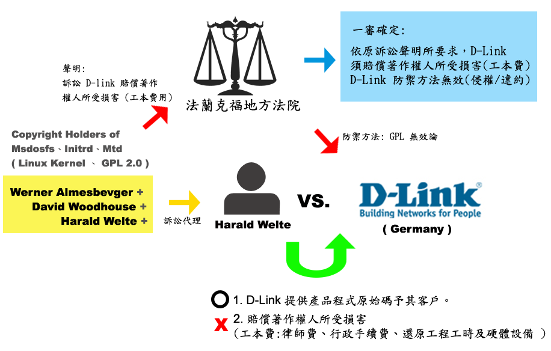
重點還是...
- 而這些訴訟案件的重點還是在於開放原始碼這個最重要的義務性規定，可以說是
- 以訴訟為手段，要求授權條款的違反者遵守條款的規定提供其產品的軟體程式原始碼
訴 求 開放
就像...
- 爬山路上亭子善心人士免費提供的茶水，如果整桶被偷走了現實上很難求償，
- 因為這個東西權利人本來就是送出來的
- 是以非常難以詳估原權利人所受到的金錢損失和失去的金錢利益
奉茶
只有必要支出
- 是以現行自由軟體爭訟上所要求的費用、多僅止於訴訟支出的必要
勞務費用
嗯嗯嗯
律師費、行政手續費、必要支出、還原工程時間成本
- 包括律師費、行政手續費、或權利人為了舉証所從事還原工程耗費的時間成本與必要金錢支出
「雙重授權模式」
- 不要忘了自由軟體還有一種賺錢的方法叫「雙重授權模式」
- 這類的自由軟體它有免授權金的GPL版本、但同時也有商業授權的收費版本
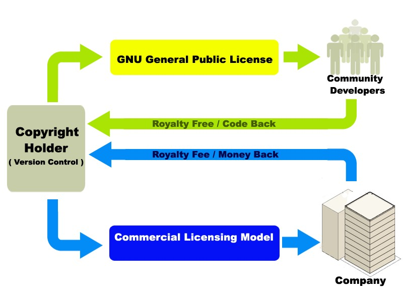
像是mysql及qtopia
MYSQL
QTOPIA
用商業授權...
- 這類的軟體可以用GPL免授權金無償取得，但若一旦使用的範圍逾越本來GPL的授權方式
- 那麼MYSQL AB及TROLLTECH自然可以向侵權者要求，轉用商業授權的版本來計算侵權賠償金
照價賠償
最有殺傷力的
- 但是話說回來、GPL侵權訴訟對於企業而言，真正有殺傷力的
殺手鐧
已經發生...
- 假處分其實一點都不假，它有真的效果，簡單來說就是侵權行為已經發生
- 這時候權利人可以提供擔保向法院申請扣押這個疑似侵權產品不得進行販賣，
- 而不用等到司法判決的最終決果才能阻止侵權行為的繼續進行
假處分
真效果
具体效果
- 那麼就效果而言、權利人可以要求侵權的商業公司
- 這些侵權產品
停止散布
<brief/>
- 5' 有关
- 10' 知识产权
- 10' 自由文化
- 10' 许可分类
- 10' 自由软件
- 10' 深入GNU
- 10' 协议选择
- 10' 现实冲突
- 10' 商用模式
不表示所有名目
- 不收取軟體授權金，不表示所有名目的金錢營收都沒辦法
授權金
≠ 所有收費名目
可以有收費
- 其實自由軟體就像高速公路一樣
- 以FREE為字首、但仍然常態性的可以有收費的動作
Free Way
商業模式
- 自由軟體仍然有其可資運用的商業模式，簡單來說就是兩個字
變通
書名就是
The Business and Economics of Linux and Open Source
七種武器
- 1、Commercial software for Linux
- 2、Services and support tied to an open source product
- 3、Enhancing commercial products with open source software
- 4、Open source software to enable hardware components
- 5、Commercializing open source through dual–licensing
- 6、Lowering the cost of end–of–life
- 7、Building an Ecosystem]]
第二类: 是軟體加硬體、嵌入式的加值模式
嵌入式 加值
第三类: 建立商譽及認證收費的商標授權金收費
商標 授權
但是有知識的話人人都可以販賣美語教學
○ 販賣美語教學
最極端的例子像是華碩的
- 雖然賣的是硬體不是軟體，但其賣點在於軟硬體結合後的高度易用性或高效率性
Eee PC
GOOGLE的
- 還有即使掀起波濤的GOOGLE的ANDROID手機共同開發平台
免徵軟體授權金
- 因為自由軟體多有免徵軟體授權金的特性，是以能夠降低產品製造成本
ROYALTY FREE
開放原始碼...
- 軟體本身開放原始碼，故能客製化以大幅度提升軟硬體之間的契合度及穩定性
CUSTOMIZE
第三種是
3、 TRADEMARK Licensing Fee
不收取軟體授權金
- 幾近所有的自由軟體商用模式都是
- 不收取軟體授權金的
ROYALTY FREE
範圍
- 但這個不能徵取的範圍原則上只停留在
- Copyright及Patent的範圍
× 著作權/專利權
簡單來說
- 商標這種東西並不是軟體使用四大自由的必要條件
- 沒有商標授權的軟體，使用者還是可以擁有四大自由
不妨礙
四大自由
免責條款
- 然而自由軟體多是聲明免責條款
- 不負任何擔保責任的，於是乎商標的概念在自由軟體的一般散布下是非必需的要素
Disclaimer
法律原則
- 法律的大原則就是權利獲取與義務支出兩方面需要達到合理平衡的狀態
- 所以不收取費用的散布行為通常可以主張免負擔保責任
無償 → 免責
高責任...
- 但是如果散布者擔負有比無償散布時更高的擔保責任
- 當然也可以合理的收取一定的費用
責任升高
= 收取價金
典型的商譽及品質擔保
- 而商標授權，就是對產品最典型的商譽及品質擔保
- 自然就可以收取這個軟體的商標授權金費用
商標授權
→ 商譽保證
→ 收取價金
GPL3第7條...
- 新版GPL3第7條第5項、就明白的告訴大家著作權人可以明示保留其商標權授權的權利
- 任何人未經原權利人允許的前提下，都不可以自行運用軟體相關的商品服務標記
(5)商標權明示保留條款
e.g
- 但任何主機上只要標示RED HAT為其作業系統，則須額外支付其商標權的授權費用
- 像是、RED HAT的LINUX DISTRIBUTION，使用其社群版本fedora並不需要支付任何授權金費用
第四種是
4、 Dual Licensing Model
是以...
- 軟體著作權利人對於一般使用者
- 可以用免徵授權金的自由軟體授權模式將程式釋出予其自由使用(通常是GPL)
A、一般使用者 →
自由軟體授權模式
而對於商業公司
- 則可向其要求付費授權的商業授權模式，以提供後續的諮商除錯服務的方式來維繫客源。
B、商業公司 →
商業授權模式
還有、瑞典MySQL AB的
- 都是著名的自由軟體雙重授權模式營運公司(現在皆在被收購之列)
MySQL
並且開放程式原始碼
- 不同於一般SHAREWARE，使用者並不能接觸到程式原始碼
開放
必然
- 但能運行雙重授權模式的自由軟體品質必然優良
- 因為能有廣大的社群使用者透過自由軟體授權的管道為此軟體進行改良及錯誤回報(Debug)
社群改良
不必擔心無人維護
- 而且商業公司不必擔心這樣的軟體嗣後因為原生公司倒閉而無人維護
- 至不濟它總是有個社群版本在跑，任何人拿到原始碼後都可以自行維護
不怕斷頭
最重要的是
- 商業版本的付費者修改原程式後不用開放己身軟體的程式原始碼
不被感染
嗯嗯嗯
WHY?
- 為什麼付費使用就可以不被GPL等COPYLEFT的自由軟體授權條款所感染???
再看一次
- 商業公司是依商業授權條款取得程式
- 自然能夠透過此種應用方式，不被COPYLEFT性質的自由軟體授權條款所拘束
;-)
此時商業公司因其付費取得商業授權、雖事實上使用了眾人共工營運的自由軟體專案卻能夠自外於GPL等授權條款的拘束
全身而退
因為
- 因為它三面討好，滿足不同立場使用者對軟體的共同需要
三面討好
各取所需
對於
- 而言、其得以透過商業授權模式收取軟體授權金維持生計
A、著作權人
而對於
- 而言、其得到無償下載的軟體使用，並且能夠依自由軟體授權條款進行研究、修改、重製及再散布
B、一般公眾
最後、對於
- 而言、其得到優質的軟體及支援服務、並且修改原程式後也不用被強迫提供衍生程式的原始碼
C、付費公司
新時代...
- 部份的自由軟體運動推行者認為新時代的軟體，該有免費就可以取得的版本
- 可以用在教育學習上、降低數位落差及提升人類整體生活品質
免費的版本
就像雙重授權模式的上緣
- 此時軟體雖然讓人免費取得，但軟體的授權者也並非毫無所得
迴流
- 因為軟體程式碼開放給網路社群，程式改良後的成果會經由程式的官方論壇回到著作權人的掌握
- 就算沒有程式碼的迴流，至不濟、使用者也會回報程式的瑕疵、bug，以及使用上不便的地方
CODE BACK
重點!
- 而透過雙重授權模式、程式也可以讓人有付費取得的版本
- 付費的版本或許功能的更新速度較之免費版本較為快些，
- 重點是付費取得的商業公司得到穩固的服務支援擔保
付費的版本
此時是雙重授權模式的下緣
- 商業版本讓人付費取得，付費的公司修改後的衍生程式不需要對外提供程式原始碼
贏利
- 但是把軟體商業授權出去的公司當然也有好處，因為這是一個收費的授權，money back(錢回來了)
- 有了金流的支撐，這家軟體公司可以繼續經營下去把軟體寫的更好
MONEY BACK
嗯嗯嗯
- 對軟體授權法制與自由軟體授權模式的介紹課程大抵到此告一段落
THAT'S ALL
最後
- 這份簡報文字內容採用Creative Commons
- 授權條款台灣2.5版進行授權
只要使用者遵守
(1) 姓名標示
-nc
(2) 非商業性
-sa
(3) 相同方式分享
則
- 可這篇簡報的文字內容
- 王卯卯的BLOG <http://blog.sina.com.cn/m/wangmomo>
- 原作者王卯卯著作權宣示：使用於個人用途或論壇,但請勿用於商業用途
合法使用
其中圖片
- 至於簡報中其他著作權人以不同的
- 聲明散布的動畫圖片
公眾授權
尊重原著作權人
- 亦請讀者尊重其個別的聲明條款，以符合原著作權人
- 的方式利用之
遊戲規則
;-)
- 請閱覽讀者不可更行取用，除非取用者自忖自身情形亦符合理使用的範疇，
- 且自負相關法律責任-援引我國著作權法第52條及65條主張為學術推廣而合理使用
- 其著作權仍歸原始著作權人所有
- 此圖片取用於網際網路
我不認識你
但是謝謝你
总之
期望可以记住的~单位时间可以记住的只有7+-2 个
- 知识产权/专利不尽合理
- GNU衍生民间对策
- CC合理开放精神财富
- FLOSS合理开放源码
- 开源照样有銭赚!-)
<版本/>
- 120509 Zoom.Quiet S5再制完成
- 120507 Zoom.Quiet 尝试S5再制
- 081022 林誠夏,openfoundry.org XUL幻灯格式发行
纯HTML 幻灯撰写框架!...

- S5== a S imple S tandards-Based S lide S how S ystem
- 仅仅依靠 CSS+JS 的HTML格式幻灯演示框架


{kind=link}